B2_flowkit · Opus 5.5 · attempt rwpHxEv
Batch fk1 · job fk1_B_EXP22004082_26_Oct_2022_flowkit_claude-opus-5-5 · trial B_EXP22004082_26_Oct_2022_flowki__rwpHxEv. Long tool outputs are cut at 6,000 characters.
Score
0.60
0.60
Minutes
11.4
11.4
Agent cost
$2.65
$2.65
Steps
165
165
Screenshots / images
22
22
2
tool call · Bash
cat /task/inputs/plan.md; echo; cat /task/inputs/plate_layout.csv; ls -la /task/inputs/raw/ /task/outputs/ 2>&1
3
tool output
# Plan: EXP22004082 | Testing Flow Cytometry based Caspase Assays (run of 2022-10-25 / 2022-10-26) Notebook text as written by the scientist, up to acquisition of this run. Sections belonging to other runs of this entry are omitted. Row and column labels in the plate tables were added for readability. ## Background Loss of function of PGRN has been shown to negatively impact neural cell health reflected by increased cell death and caspase activity. Caspases are important mediators of the cell death pathway (apoptosis). Caspases are a group of proteases that result in cleavage of protein substrates subsequently leading to cell disassembly. For the PGRN RNAswap program we will want to measure caspase activity in iPSC derived neurons before and after adding the PGRN RNAswap constructs to ensure that PGRN protein replacement is rescuing the health of neurons. Previously I have tested out some caspase activity kits but now I will be trying to detect caspase levels using flow cytometry. ## Objective Measure caspase 3 activity using flow cytometry in H4 cells to practice using this assay which will eventually be used in iPSC derived neurons. ## Materials (entry-level list) - H4 WT cells - H4 PGRN KO E1 - H4 PGRN KO E3 - H4 media - CellEvent Caspase-3/7 Green Flow Cytometry Assay Kit - Cell Signalling (Cleaved Caspase-3 (Asp175) Antibody (Alexa Fluor® 488 Conjugate) #9669) - Camptothecin (abcam) ## DAY 2022-10-25 Test out Cell Signaling Cleaved-Caspase 3 Alexa-flour 488 antibody - Split H4 cells into 24 well plate (50K cells/well) | | 1 | 2 | 3 | 4 | 5 | 6 | |---|---|---|---|---|---|---| | A | WT | WT | WT | WT | WT | WT | | B | E1 | E1 | E1 | E1 | E1 | E1 | | C | E3 | E3 | E3 | E3 | E3 | E3 | | D | | | | | | | 2. Let cells grow for o/n ## DAY 2022-10-26 Run Intracellular flow: ### Materials - 96w round bottom plate - Intracellular Fixation & Permeabilization Buffer Set (cat. no. 88-8824) - Flow Cytometry Staining Buffer (cat. no. 00-4222) - Zombie NIR Biolgend (423105) - Caspase-3 antibody (9669S) ### Procedure - Aspirate all media - PBS wash (200uL PBS) - Aspirate PBS - Add 10x Trypsin (150ul/well) - Put back in incubator (5min) - Add FBS (75ul/well) - Move all solution and cells to a round-bottom 96w plate. Check the empty plate by microscope to confirm that the majority of cells were lifted - Spin down (300g, 5min) - PBS wash (200uL PBS) - Aspirate PBS - Stain with Zombie NIR (1:200 dilution in PBS, 150ul/well) - Put back in incubator (15min) - Spin down and remove all Zombie NIR with a P200 multichannel - Fix the cells in IC Fixation Buffer (200uL/well, 30min, RT, dark). Pipet gently to resuspend cells - Spin down (400-600g, 5min, RT) (400xg this time) - Remove all solution with a P200 multichannel **Do not throw fix down the drain!! Collect and add to waste container in hood - Permeabilize the cells in 1X Permeabilization Buffer (200uL/well, 30min, RT, dark). - Spin down (400-600g, 5min, RT). - Remove all solution with a P200 multichannel **Do not throw fix down the drain!! Collect and add to waste container in hood - Resuspend cells with 100uL/well with 1X Permeabilization Buffer. - Prepare antibodies in 100 uL/well of 1x Permeabilization Buffer. Example: for a final 1:200 dilution, add 1 ul Ab to 100 ul of pearmeabilization buffer. Add to well which already has 100 ul of buffer (final dilution is 1:200). Without washing, add the antibody solution of intracellular antigen(s) to cells and incubate for at least 30 minutes at RT and protect from light. Alternatively, incubate overnight at 4C (200ul/well, dark). For Caspase antibody: 1:50 (4uL into 96uL buffer). Will also try 1:100 (2uL into 98uL buffer) - Spin down (400-600g, 5 min, RT) - Add 200 µL of 1X Permeabilization Buffer to each well and centrifuge samples at 400-600 x g (400xg this time) at room temperature for 5 minutes. Discard the supernatant. - Repeat last step - Resuspend stained cells in an appropriate volume of Flow Cytometry Staining Buffer. - Analyze by flow cytometry (ATTUNE). ### Attune Voltage Settings FSC-20; SSC-290; BL1 (caspase)-250; RL3 (Zombie NIR)-350 ### Flow plate (96-well) | | 1 | 2 | 3 | 4 | 5 | 6 | 7 | 8 | 9 | 10 | 11 | 12 | |---|---|---|---|---|---|---|---|---|---|---|---|---| | A | WT no stain | WT caspase only (1:100) | WT zombie only | WT-1 caspase @ 1:100 | WT-2 caspase @ 1:50 | WT-3 caspase @ 1:50 | E1 no stain | E1 caspase only (1:100) | E1 zombie only | E1-1 caspase @ 1:100 | E1-2 caspase @1:50 | E1-3 caspase @ 1:50 | | B | E3 no stain | E3 caspase only (1:100) | E3 zombie only | E3-1 @ 1:100 | E3-2 caspase @ 1:50 | E3-3 caspase @ 1:50 | | | | | | | file,well,sample,cell_line Caspase_h4_mlk(4)_caspase_Group_A1_WT_no stain.fcs,A1,WT no stain,WT Caspase_h4_mlk(4)_caspase_Group_A2_Wt_caspase_1-100.fcs,A2,WT caspase only (1:100),WT Caspase_h4_mlk(4)_caspase_Group_A3_Wt_zombie.fcs,A3,WT zombie only,WT Caspase_h4_mlk(4)_caspase_Group_A4_Wt-1_1-100.fcs,A4,WT-1 caspase @ 1:100,WT Caspase_h4_mlk(4)_caspase_Group_A5_wt-2_1-50.fcs,A5,WT-2 caspase @ 1:50,WT Caspase_h4_mlk(4)_caspase_Group_A6_wt3_1-50.fcs,A6,WT-3 caspase @ 1:50,WT Caspase_h4_mlk(4)_caspase_Group_A7_E1_no stain.fcs,A7,E1 no stain,E1 Caspase_h4_mlk(4)_caspase_Group_A8_E1_caspase_1-100.fcs,A8,E1 caspase only (1:100),E1 Caspase_h4_mlk(4)_caspase_Group_A9_E1_zombie.fcs,A9,E1 zombie only,E1 Caspase_h4_mlk(4)_caspase_Group_A10_E1-1_1-100.fcs,A10,E1-1 caspase @ 1:100,E1 Caspase_h4_mlk(4)_caspase_Group_A11_E1-2_1-50.fcs,A11,E1-2 caspase @1:50,E1 Caspase_h4_mlk(4)_caspase_Group_A12_E1-3_1-50.fcs,A12,E1-3 caspase @ 1:50,E1 Caspase_h4_mlk(4)_caspase_Group_B1_E3_no stain.fcs,B1,E3 no stain,E3 Caspase_h4_mlk(4)_caspase_Group_B2_E3_caspase_1-100.fcs,B2,E3 caspase only (1:100),E3 Caspase_h4_mlk(4)_caspase_Group_B3_E3_zombie.fcs,B3,E3 zombie only,E3 Caspase_h4_mlk(4)_caspase_Group_B4_E3-1_1-100.fcs,B4,E3-1 @ 1:100,E3 Caspase_h4_mlk(4)_caspase_Group_B5_E3-2_1-50.fcs,B5,E3-2 caspase @ 1:50,E3 Caspase_h4_mlk(4)_caspase_Group_B6_E3-3-1-50.f … [1,970 more characters not shown]
5
tool call · Bash
python3 -I -c "
import flowkit as fk, glob, os
for f in sorted(glob.glob('inputs/raw/*.fcs')):
s = fk.Sample(f)
m = s.metadata
print(os.path.basename(f), s.event_count)
if 'A1_' in f:
for k,v in sorted(m.items()):
print(' ',k, v)
"
6
tool output
Caspase_h4_mlk(4)_caspase_Group_A10_E1-1_1-100.fcs 58936
Caspase_h4_mlk(4)_caspase_Group_A11_E1-2_1-50.fcs 51193
Caspase_h4_mlk(4)_caspase_Group_A12_E1-3_1-50.fcs 51047
Caspase_h4_mlk(4)_caspase_Group_A1_WT_no stain.fcs 6969
#coincidentcount 5
#flowrate 100
#laser1asf 1.06
#laser1color Blue
#laser1delay 1100
#laser2asf 1.11
#laser2color Red
#laser2delay 1493
#laser3asf 1.03
#laser3color Violet
#laser3delay 720
#laser4asf 1.00
#laser4color Yellow
#laser4delay 312
#laserconfig BRV6Y
#p12label GFP
#p12target AAV-GFP
#p13label Zombie NIR
#p13target LiveDead
#p1label NA
#p1target NA
#p4label GFP
#p4target AAV-GFP
#p5label Zombie NIR
#p5target LiveDead
#p8label GFP
#p8target AAV-GFP
#p9label Zombie NIR
#p9target LiveDead
#ptdate 26-Oct-2022
#ptresult Pass
#tr1 OR_FSC,25000
#widththreshold 1000
#winext 0
beginanalysis 000000000000
begindata 000000008192
beginstext 000000000000
btim 11:55:08
byteord 1,2,3,4
cells NA
com NA
cyt 0A29009 Attune NxT Acoustic Focusing Cytometer (Lasers: BRV6Y)
cytsn 2AFC228071019
datatype F
date 26-Oct-2022
endanalysis 000000000000
enddata 000000370579
endstext 000000000000
etim 11:56:46
exp NA
fil A1_WT_no stain.fcs
hostid SEA11065ATTUNE
inst NA
lost 0
mode L
nextdata 000000000000
op Jeff Huang
originality Original
p10b 32
p10e 0,0
p10f NA
p10l 488
p10n FSC-W
p10r 1024
p10s FSC-W
p10v 20
p11b 32
p11e 0,0
p11f NA
p11l 488
p11n SSC-W
p11r 1024
p11s SSC-W
p11v 290
p12b 32
p12e 0,0
p12f NA
p12l 488
p12n BL1-W
p12r 1024
p12s AAV-GFP-GFP-W
p12v 250
p13b 32
p13e 0,0
p13f NA
p13l 640
p13n RL3-W
p13r 1024
p13s LiveDead-Zombie NIR-W
p13v 350
p1b 32
p1e 0,0
p1f NA
p1l NA
p1n Time
p1r 67108864
p1s Time
p1v NA
p2b 32
p2e 0,0
p2f NA
p2l 488
p2n FSC-A
p2r 1048576
p2s FSC-A
p2v 20
p3b 32
p3e 0,0
p3f NA
p3l 488
p3n SSC-A
p3r 1048576
p3s SSC-A
p3v 290
p4b 32
p4e 0,0
p4f NA
p4l 488
p4n BL1-A
p4r 1048576
p4s AAV-GFP-GFP-A
p4v 250
p5b 32
p5e 0,0
p5f NA
p5l 640
p5n RL3-A
p5r 1048576
p5s LiveDead-Zombie NIR-A
p5v 350
p6b 32
p6e 0,0
p6f NA
p6l 488
p6n FSC-H
p6r 1048576
p6s FSC-H
p6v 20
p7b 32
p7e 0,0
p7f NA
p7l 488
p7n SSC-H
p7r 1048576
p7s SSC-H
p7v 290
p8b 32
p8e 0,0
p8f NA
p8l 488
p8n BL1-H
p8r 1048576
p8s AAV-GFP-GFP-H
p8v 250
p9b 32
p9e 0,0
p9f NA
p9l 640
p9n RL3-H
p9r 1048576
p9s LiveDead-Zombie NIR-H
p9v 350
par 13
plateid NA
platename Caspase_h4_mlk(4)
proj caspase
smno Group
spillover 6,BL1-A,RL3-A,BL1-H,RL3-H,BL1-W,RL3-W,1.000000,0.000000,0.000000,0.000000,0.000000,0.000000,0.000000,1.000000,0.000000,0.000000,0.000000,0.000000,0.000000,0.000000,1.000000,0.000000,0.000000,0.000000,0.000000,0.000000,0.000000,1.000000,0.000000,0.000000,0.000000,0.000000,0.000000,0.000000,1.000000,0.000000,0.000000,0.000000,0.000000,0.000000,0.000000,1.000000
src NA
sys SEA11065ATTUNE Microsoft Windows 10 Enterprise LTSC
timestep 0.001
tot 6969
vol 164000
wellid A1
Caspase_h4_mlk(4)_caspase_Group_A2_Wt_caspase_1-100.fcs 3149
Caspase_h4_mlk(4)_caspase_Group_A3_Wt_zombie.fcs 5742
Caspase_h4_mlk(4)_caspase_Group_A4_Wt-1_1-100.fcs 20776
Caspase_h4_mlk(4)_caspase_Group_A5_wt-2_1-50.fcs 13119
Caspase_h4_mlk(4)_caspase_Group_A6_wt3_1-50.fcs 21946
Caspase_h4_mlk(4)_caspase_Group_A7_E1_no stain.fcs 33911
Caspase_h4_mlk(4)_caspase_Group_A8_E1_caspase_1-100.fcs 52749
Caspase_h4_mlk(4)_caspase_Group_A9_E1_zombie.fcs 49297
Caspase_h4_mlk(4)_caspase_Group_B1_E3_no stain.fcs 26935
Caspase_h4_mlk(4)_caspase_Group_B2_E3_caspase_1-100.fcs 36048
Caspase_h4_mlk(4)_caspase_Group_B3_E3_zombie.fcs 46022
Caspase_h4_mlk(4)_caspase_Group_B4_E3-1_1-100.fcs 27503
Caspase_h4_mlk(4)_caspase_Group_B5_E3-2_1-50.fcs 37596
Caspase_h4_mlk(4)_caspase_Group_B6_E3-3-1-50.fcs 247978
tool call · Bash
python3 -I -c "
import flowkit as fk, glob, os
keys=['wellid','fil','tot','vol','btim','etim','#flowrate','p2v','p3v','p4v','p5v','#tr1','#coincidentcount','lost','spillover']
for f in sorted(glob.glob('inputs/raw/*.fcs')):
s = fk.Sample(f)
m = s.metadata
print(os.path.basename(f)[32:], [m.get(k) if k!='spillover' else m.get(k)[:40] for k in keys])
"
9
tool output
A10_E1-1_1-100.fcs ['A10', 'A10_E1-1_1-100.fcs', '58936', '164000', '12:13:52', '12:15:31', '100', '20', '290', '250', '350', 'OR_FSC,25000', '244', '0', '6,BL1-A,RL3-A,BL1-H,RL3-H,BL1-W,RL3-W,1.'] A11_E1-2_1-50.fcs ['A11', 'A11_E1-2_1-50.fcs', '51193', '162000', '12:15:58', '12:17:36', '100', '20', '290', '250', '350', 'OR_FSC,25000', '167', '0', '6,BL1-A,RL3-A,BL1-H,RL3-H,BL1-W,RL3-W,1.'] A12_E1-3_1-50.fcs ['A12', 'A12_E1-3_1-50.fcs', '51047', '164000', '12:18:02', '12:19:41', '100', '20', '290', '250', '350', 'OR_FSC,25000', '174', '0', '6,BL1-A,RL3-A,BL1-H,RL3-H,BL1-W,RL3-W,1.'] A1_WT_no stain.fcs ['A1', 'A1_WT_no stain.fcs', '6969', '164000', '11:55:08', '11:56:46', '100', '20', '290', '250', '350', 'OR_FSC,25000', '5', '0', '6,BL1-A,RL3-A,BL1-H,RL3-H,BL1-W,RL3-W,1.'] A2_Wt_caspase_1-100.fcs ['A2', 'A2_Wt_caspase_1-100.fcs', '3149', '163000', '11:57:13', '11:58:51', '100', '20', '290', '250', '350', 'OR_FSC,25000', '2', '0', '6,BL1-A,RL3-A,BL1-H,RL3-H,BL1-W,RL3-W,1.'] A3_Wt_zombie.fcs ['A3', 'A3_Wt_zombie.fcs', '5742', '162000', '11:59:19', '12:00:57', '100', '20', '290', '250', '350', 'OR_FSC,25000', '10', '0', '6,BL1-A,RL3-A,BL1-H,RL3-H,BL1-W,RL3-W,1.'] A4_Wt-1_1-100.fcs ['A4', 'A4_Wt-1_1-100.fcs', '20776', '162000', '12:01:24', '12:03:02', '100', '20', '290', '250', '350', 'OR_FSC,25000', '56', '0', '6,BL1-A,RL3-A,BL1-H,RL3-H,BL1-W,RL3-W,1.'] A5_wt-2_1-50.fcs ['A5', 'A5_wt-2_1-50.fcs', '13119', '162000', '12:03:29', '12:05:06', '100', '20', '290', '250', '350', 'OR_FSC,25000', '21', '0', '6,BL1-A,RL3-A,BL1-H,RL3-H,BL1-W,RL3-W,1.'] A6_wt3_1-50.fcs ['A6', 'A6_wt3_1-50.fcs', '21946', '164000', '12:05:33', '12:07:11', '100', '20', '290', '250', '350', 'OR_FSC,25000', '35', '0', '6,BL1-A,RL3-A,BL1-H,RL3-H,BL1-W,RL3-W,1.'] A7_E1_no stain.fcs ['A7', 'A7_E1_no stain.fcs', '33911', '164000', '12:07:37', '12:09:16', '100', '20', '290', '250', '350', 'OR_FSC,25000', '76', '0', '6,BL1-A,RL3-A,BL1-H,RL3-H,BL1-W,RL3-W,1.'] A8_E1_caspase_1-100.fcs ['A8', 'A8_E1_caspase_1-100.fcs', '52749', '164000', '12:09:42', '12:11:21', '100', '20', '290', '250', '350', 'OR_FSC,25000', '219', '0', '6,BL1-A,RL3-A,BL1-H,RL3-H,BL1-W,RL3-W,1.'] A9_E1_zombie.fcs ['A9', 'A9_E1_zombie.fcs', '49297', '164000', '12:11:47', '12:13:25', '100', '20', '290', '250', '350', 'OR_FSC,25000', '190', '0', '6,BL1-A,RL3-A,BL1-H,RL3-H,BL1-W,RL3-W,1.'] B1_E3_no stain.fcs ['B1', 'B1_E3_no stain.fcs', '26935', '162000', '12:20:08', '12:21:46', '100', '20', '290', '250', '350', 'OR_FSC,25000', '52', '0', '6,BL1-A,RL3-A,BL1-H,RL3-H,BL1-W,RL3-W,1.'] B2_E3_caspase_1-100.fcs ['B2', 'B2_E3_caspase_1-100.fcs', '36048', '164000', '12:22:12', '12:23:51', '100', '20', '290', '250', '350', 'OR_FSC,25000', '93', '0', '6,BL1-A,RL3-A,BL1-H,RL3-H,BL1-W,RL3-W,1.'] B3_E3_zombie.fcs ['B3', 'B3_E3_zombie.fcs', '46022', '164000', '12:24:17', '12:25:56', '100', '20', '290', '250', '350', 'OR_FSC,25000', '158', '0', '6,BL1-A,RL3-A,BL1-H,RL3-H,BL1-W,RL3-W,1.'] B4_E3-1_1-100.fcs ['B4', 'B4_E3-1_1-100.fcs', '27503', '162000', '12:26:23', '12:28:01', '100', '20', '290', '250', '350', 'OR_FSC,25000', '54', '0', '6,BL1-A,RL3-A,BL1-H,RL3-H,BL1-W,RL3-W,1.'] B5_E3-2_1-50.fcs ['B5', 'B5_E3-2_1-50.fcs', '37596', '164000', '12:28:27', '12:30:06', '100', '20', '290', '250', '350', 'OR_FSC,25000', '101', '0', '6,BL1-A,RL3-A,BL1-H,RL3-H,BL1-W,RL3-W,1.'] B6_E3-3-1-50.fcs ['B6', 'B6_E3-3-1-50.fcs', '24797', '162000', '12:30:33', '12:32:11', '100', '20', '290', '250', '350', 'OR_FSC,25000', '32', '0', '6,BL1-A,RL3-A,BL1-H,RL3-H,BL1-W,RL3-W,1.']
11
tool call · Bash
mkdir -p /task/work && cd /task/work && cat > load.py <<'EOF'
import flowkit as fk, pandas as pd, numpy as np, os
lay = pd.read_csv('/task/inputs/plate_layout.csv')
def load(f):
s = fk.Sample(os.path.join('/task/inputs/raw', f))
df = s.as_dataframe(source='raw')
df.columns = [c[0] for c in df.columns]
return s, df
EOF
python3 -I -c "
import sys; sys.path.insert(0,'/task/work')
from load import *
for f in lay.file:
s, df = load(f)
d = df.describe(percentiles=[.01,.5,.99]).T
print(f[32:], len(df))
print(d[['min','1%','50%','99%','max']].round(0).to_string())
break
"12
tool output
A1_WT_no stain.fcs 6969
min 1% 50% 99% max
Time 0.0 2.0 53.0 94.0 98.0
FSC-A 23295.0 28034.0 396973.0 732876.0 1048575.0
SSC-A 3131.0 12066.0 257036.0 620110.0 1048575.0
BL1-A -91.0 -14.0 244.0 728.0 2326.0
RL3-A -171.0 -60.0 112.0 379.0 5298.0
FSC-H 25278.0 27764.0 200355.0 340123.0 554958.0
SSC-H 3024.0 11343.0 152878.0 316205.0 1048575.0
BL1-H 3.0 35.0 165.0 406.0 1288.0
RL3-H 0.0 37.0 99.0 254.0 2981.0
FSC-W 43.0 57.0 117.0 149.0 232.0
SSC-W 28.0 46.0 111.0 141.0 232.0
BL1-W 0.0 0.0 0.0 0.0 25.0
RL3-W 0.0 0.0 0.0 0.0 46.014
tool call · Bash
cat > overview.py <<'EOF'
import sys; sys.path.insert(0,'/task/work')
from load import *
import matplotlib; matplotlib.use('Agg'); import matplotlib.pyplot as plt
def asinh(x, c=200): return np.arcsinh(x/c)
for plot in ['fsc_ssc','fsc_singlet','bl1_rl3','time']:
fig, axes = plt.subplots(3,6, figsize=(24,12))
for ax, (i,r) in zip(axes.flat, lay.iterrows()):
s, df = load(r.file)
if plot=='fsc_ssc':
ax.hist2d(df['FSC-A'], df['SSC-A'], bins=150, range=[[0,1.05e6],[0,1.05e6]], cmap='jet', cmin=1)
elif plot=='fsc_singlet':
ax.hist2d(df['FSC-A'], df['FSC-H'], bins=150, range=[[0,1.05e6],[0,6e5]], cmap='jet', cmin=1)
elif plot=='bl1_rl3':
ax.hist2d(asinh(df['BL1-A']), asinh(df['RL3-A']), bins=150, range=[[-1,9],[-2,9]], cmap='jet', cmin=1)
ax.set_xlabel('asinh BL1-A/200'); ax.set_ylabel('asinh RL3-A/200')
elif plot=='time':
ax.hist(df['Time'], bins=100)
ax.set_title(f'{r.well} {r["sample"]} n={len(df)}', fontsize=9)
plt.tight_layout(); plt.savefig(f'ov_{plot}.png', dpi=60); plt.close()
EOF
python3 -I overview.py && ls15
tool output
__pycache__ load.py ov_bl1_rl3.png ov_fsc_singlet.png ov_fsc_ssc.png ov_time.png overview.py
16
agent
I'm looking at overview plots across all 18 wells (scatter, singlets, caspase/viability, time) before setting gates.
17
tool call · Read
{
"file_path": "/task/work/ov_fsc_ssc.png"
}18
tool output
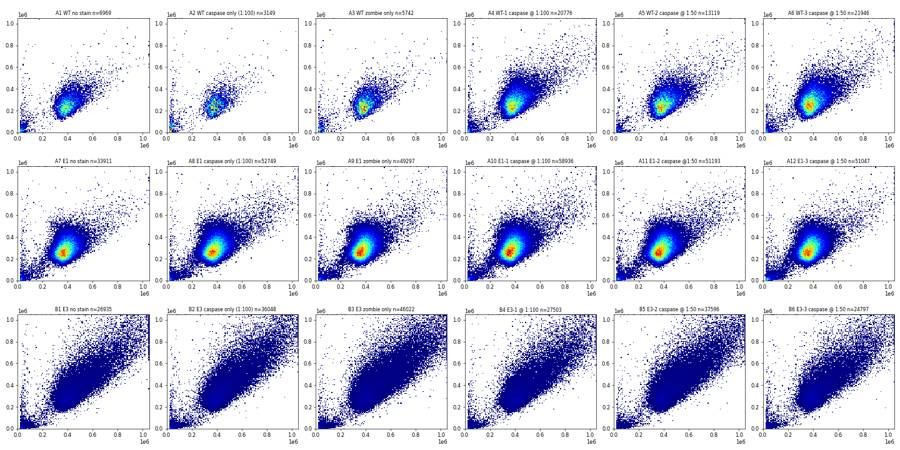
19
tool call · Read
{
"file_path": "/task/work/ov_time.png"
}20
tool output
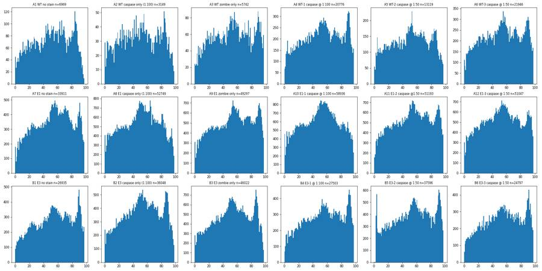
22
tool call · Read
{
"file_path": "/task/work/ov_fsc_singlet.png"
}23
tool output
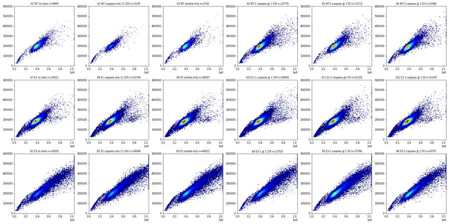
24
tool call · Read
{
"file_path": "/task/work/ov_bl1_rl3.png"
}25
tool output
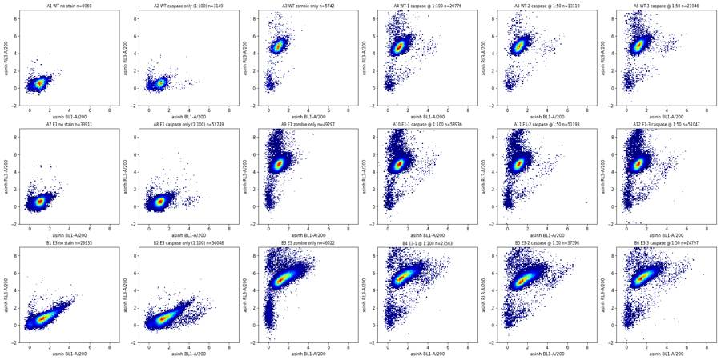
27
tool call · Bash
python3 -I -c "
import sys; sys.path.insert(0,'/task/work')
from load import *
for i,r in lay.iterrows():
s, df = load(r.file)
n=len(df)
sat = {c:(df[c]>=1048575).sum() for c in ['FSC-A','SSC-A','BL1-A','RL3-A','FSC-H','SSC-H']}
deb = (df['FSC-A']<200000).sum()
rl3 = np.arcsinh(df['RL3-A']/200)
lowrl3 = ((rl3<2.5)&(df['FSC-A']>200000)).sum()
print(r.well, r['sample'][:22].ljust(22), n, 'deb%.1f'%(100*deb/n), 'lowRL3cells %.1f'%(100*lowrl3/n), sat)
"28
tool output
A1 WT no stain 6969 deb8.3 lowRL3cells 91.7 {'FSC-A': 9, 'SSC-A': 12, 'BL1-A': 0, 'RL3-A': 0, 'FSC-H': 0, 'SSC-H': 1}
A2 WT caspase only (1:100 3149 deb19.0 lowRL3cells 81.0 {'FSC-A': 3, 'SSC-A': 12, 'BL1-A': 0, 'RL3-A': 0, 'FSC-H': 0, 'SSC-H': 1}
A3 WT zombie only 5742 deb9.8 lowRL3cells 0.3 {'FSC-A': 9, 'SSC-A': 14, 'BL1-A': 0, 'RL3-A': 6, 'FSC-H': 0, 'SSC-H': 0}
A4 WT-1 caspase @ 1:100 20776 deb4.6 lowRL3cells 0.1 {'FSC-A': 67, 'SSC-A': 46, 'BL1-A': 0, 'RL3-A': 19, 'FSC-H': 0, 'SSC-H': 3}
A5 WT-2 caspase @ 1:50 13119 deb3.7 lowRL3cells 0.1 {'FSC-A': 18, 'SSC-A': 18, 'BL1-A': 0, 'RL3-A': 17, 'FSC-H': 0, 'SSC-H': 2}
A6 WT-3 caspase @ 1:50 21946 deb3.9 lowRL3cells 0.1 {'FSC-A': 38, 'SSC-A': 28, 'BL1-A': 0, 'RL3-A': 41, 'FSC-H': 0, 'SSC-H': 2}
A7 E1 no stain 33911 deb4.0 lowRL3cells 95.9 {'FSC-A': 17, 'SSC-A': 33, 'BL1-A': 0, 'RL3-A': 0, 'FSC-H': 0, 'SSC-H': 5}
A8 E1 caspase only (1:100 52749 deb3.1 lowRL3cells 96.8 {'FSC-A': 35, 'SSC-A': 52, 'BL1-A': 0, 'RL3-A': 0, 'FSC-H': 0, 'SSC-H': 7}
A9 E1 zombie only 49297 deb3.7 lowRL3cells 0.0 {'FSC-A': 36, 'SSC-A': 43, 'BL1-A': 0, 'RL3-A': 35, 'FSC-H': 0, 'SSC-H': 7}
A10 E1-1 caspase @ 1:100 58936 deb3.4 lowRL3cells 0.0 {'FSC-A': 59, 'SSC-A': 56, 'BL1-A': 0, 'RL3-A': 62, 'FSC-H': 0, 'SSC-H': 8}
A11 E1-2 caspase @1:50 51193 deb4.1 lowRL3cells 0.0 {'FSC-A': 38, 'SSC-A': 50, 'BL1-A': 0, 'RL3-A': 74, 'FSC-H': 0, 'SSC-H': 7}
A12 E1-3 caspase @ 1:50 51047 deb5.0 lowRL3cells 0.0 {'FSC-A': 30, 'SSC-A': 47, 'BL1-A': 0, 'RL3-A': 83, 'FSC-H': 0, 'SSC-H': 6}
B1 E3 no stain 26935 deb8.5 lowRL3cells 91.0 {'FSC-A': 786, 'SSC-A': 973, 'BL1-A': 0, 'RL3-A': 0, 'FSC-H': 0, 'SSC-H': 16}
B2 E3 caspase only (1:100 36048 deb7.7 lowRL3cells 91.8 {'FSC-A': 1054, 'SSC-A': 1198, 'BL1-A': 0, 'RL3-A': 0, 'FSC-H': 0, 'SSC-H': 21}
B3 E3 zombie only 46022 deb6.5 lowRL3cells 0.0 {'FSC-A': 1692, 'SSC-A': 1830, 'BL1-A': 0, 'RL3-A': 148, 'FSC-H': 0, 'SSC-H': 28}
B4 E3-1 @ 1:100 27503 deb7.1 lowRL3cells 0.0 {'FSC-A': 940, 'SSC-A': 1004, 'BL1-A': 0, 'RL3-A': 130, 'FSC-H': 0, 'SSC-H': 14}
B5 E3-2 caspase @ 1:50 37596 deb4.8 lowRL3cells 0.0 {'FSC-A': 1355, 'SSC-A': 1450, 'BL1-A': 0, 'RL3-A': 138, 'FSC-H': 0, 'SSC-H': 35}
B6 E3-3 caspase @ 1:50 24797 deb6.4 lowRL3cells 0.1 {'FSC-A': 676, 'SSC-A': 818, 'BL1-A': 0, 'RL3-A': 94, 'FSC-H': 0, 'SSC-H': 12}30
tool call · Bash
cat > ov2.py <<'EOF'
import sys; sys.path.insert(0,'/task/work')
from load import *
import matplotlib; matplotlib.use('Agg'); import matplotlib.pyplot as plt
fig, axes = plt.subplots(1,3, figsize=(18,5))
cols = {'WT':'C0','E1':'C1','E3':'C2'}
for i,r in lay.iterrows():
s, df = load(r.file)
ax = axes[0]
ax.hist(df['FSC-A'], bins=200, range=(0,1.05e6), histtype='step', density=True, color=cols[r.cell_line], label=r.well)
axes[1].hist(df['SSC-A'], bins=200, range=(0,1.05e6), histtype='step', density=True, color=cols[r.cell_line])
rat = df['FSC-H']/df['FSC-A']
m = df['FSC-A']>200000
axes[2].hist(rat[m], bins=200, range=(0,1), histtype='step', density=True, color=cols[r.cell_line])
axes[0].set_yscale('log'); axes[2].set_xlabel('FSC-H/FSC-A')
plt.tight_layout(); plt.savefig('ov_hist.png', dpi=70)
EOF
python3 -I ov2.py31
tool output
(Bash completed with no output)
32
tool call · Read
{
"file_path": "/task/work/ov_hist.png"
}33
tool output
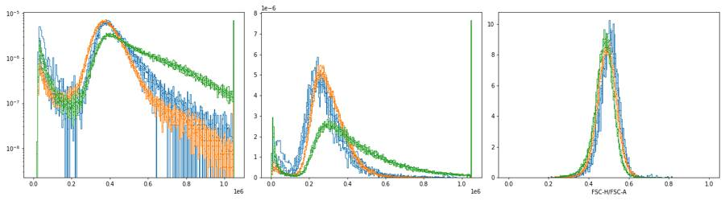
35
tool call · Bash
cat > ov3.py <<'EOF'
import sys; sys.path.insert(0,'/task/work')
from load import *
import matplotlib; matplotlib.use('Agg'); import matplotlib.pyplot as plt
from matplotlib.colors import LogNorm
wells = ['A1','A4','A10','A12','B1','B3','B4','B5']
fig, axes = plt.subplots(2,8, figsize=(32,8))
for j,w in enumerate(wells):
r = lay[lay.well==w].iloc[0]
s, df = load(r.file)
ax = axes[0,j]
ax.hist2d(df['FSC-A'], df['SSC-A'], bins=200, range=[[0,1.05e6],[0,1.05e6]], cmap='jet', norm=LogNorm())
ax.set_title(w+' FSC-A vs SSC-A')
ax = axes[1,j]
m = df['FSC-A']>150000
ax.hist2d(df['FSC-A'][m], (df['FSC-H']/df['FSC-A'])[m], bins=200, range=[[0,1.05e6],[0.1,0.9]], cmap='jet', norm=LogNorm())
ax.set_title(w+' FSC-A vs H/A')
plt.tight_layout(); plt.savefig('ov_scatter_log.png', dpi=50)
EOF
python3 -I ov3.py36
tool output
(Bash completed with no output)
37
agent
Checking log-density scatter plots to place the debris and doublet gate boundaries.
38
tool call · Read
{
"file_path": "/task/work/ov_scatter_log.png"
}39
tool output
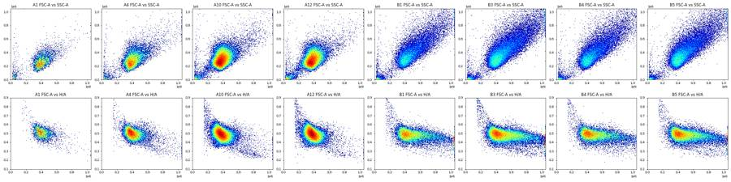
41
tool call · Bash
cat > ov4.py <<'EOF'
import sys; sys.path.insert(0,'/task/work')
from load import *
import matplotlib; matplotlib.use('Agg'); import matplotlib.pyplot as plt
from matplotlib.colors import LogNorm
def pre(df):
m = (df['FSC-A']>180000)&(df['FSC-A']<1040000)&(df['SSC-A']>40000)&(df['SSC-A']<1040000)
rat = df['FSC-H']/df['FSC-A']
m &= (rat>0.37)&(rat<0.8)
return df[m]
A = lambda x: np.arcsinh(x/200)
fig, axes = plt.subplots(3,6, figsize=(30,14))
for ax,(i,r) in zip(axes.flat, lay.iterrows()):
s, df = load(r.file); d = pre(df)
ax.hist2d(d['FSC-A'], A(d['RL3-A']), bins=150, range=[[1.5e5,1.05e6],[-1,9]], cmap='jet', norm=LogNorm())
ax.set_title(f'{r.well} {r["sample"]} FSC-A vs RL3 n={len(d)}')
plt.tight_layout(); plt.savefig('ov_fsc_rl3.png', dpi=45); plt.close()
fig, axes = plt.subplots(1,3, figsize=(20,5))
cols = {'no stain':'k','caspase only':'C0','zombie only':'C3'}
for i,r in lay.iterrows():
s, df = load(r.file); d = pre(df)
ax = axes[['WT','E1','E3'].index(r.cell_line)]
smp = r['sample']
c = 'k' if 'no stain' in smp else 'C0' if 'caspase only' in smp else 'C3' if 'zombie' in smp else ('C2' if '1:100' in smp else 'C1')
ax.hist(A(d['RL3-A']), bins=200, range=(-1,9), histtype='step', density=True, color=c, label=r.well)
for ax in axes: ax.set_yscale('log'); ax.legend(fontsize=7); ax.set_xlabel('asinh(RL3-A/200)')
plt.tight_layout(); plt.savefig('ov_rl3_hist.png', dpi=60)
EOF
python3 -I ov4.py42
tool output
(Bash completed with no output)
43
tool call · Read
{
"file_path": "/task/work/ov_rl3_hist.png"
}44
tool output
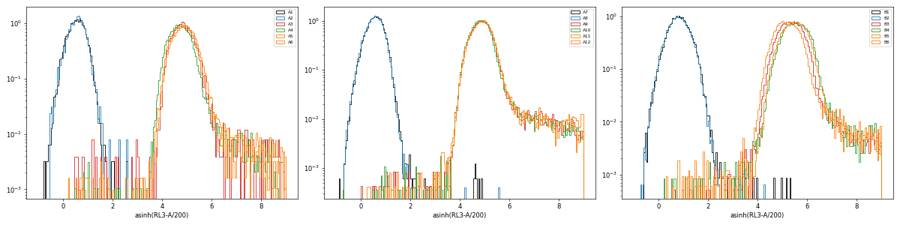
45
tool call · Read
{
"file_path": "/task/work/ov_fsc_rl3.png"
}46
tool output
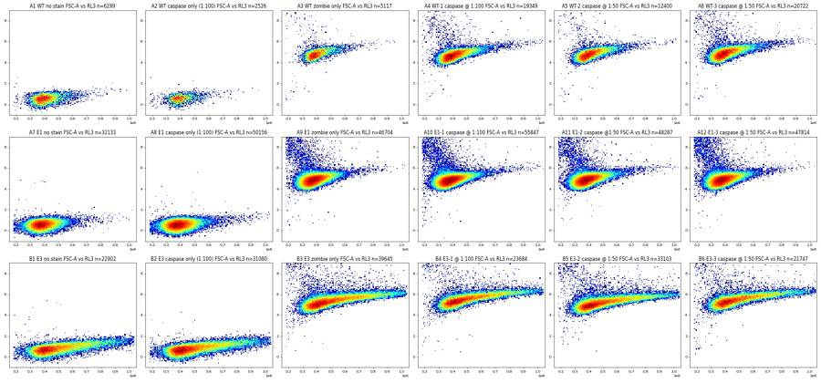
48
tool call · Bash
cat > ov5.py <<'EOF'
import sys; sys.path.insert(0,'/task/work')
from load import *
import matplotlib; matplotlib.use('Agg'); import matplotlib.pyplot as plt
from matplotlib.colors import LogNorm
def pre(df):
m = (df['FSC-A']>180000)&(df['FSC-A']<1040000)&(df['SSC-A']>40000)&(df['SSC-A']<1040000)
rat = df['FSC-H']/df['FSC-A']
m &= (rat>0.37)&(rat<0.8)
return df[m]
A = lambda x: np.arcsinh(x/200)
for xch in ['FSC-A','SSC-A']:
fig, axes = plt.subplots(3,6, figsize=(30,14))
for ax,(i,r) in zip(axes.flat, lay.iterrows()):
s, df = load(r.file); d = pre(df)
ax.hist2d(d[xch], A(d['BL1-A']), bins=150, range=[[1.5e5 if xch=='FSC-A' else 0,1.05e6],[-1,7]], cmap='jet', norm=LogNorm())
ax.set_title(f'{r.well} {r["sample"]} {xch} vs BL1 n={len(d)}')
ax.grid(alpha=.3)
plt.tight_layout(); plt.savefig(f'ov_{xch}_bl1.png', dpi=45); plt.close()
fig, axes = plt.subplots(1,3, figsize=(20,5))
for i,r in lay.iterrows():
s, df = load(r.file); d = pre(df)
ax = axes[['WT','E1','E3'].index(r.cell_line)]
smp = r['sample']
c = 'k' if 'no stain' in smp else 'C0' if 'caspase only' in smp else 'C3' if 'zombie' in smp else ('C2' if '1:100' in smp else 'C1')
ax.hist(A(d['BL1-A']), bins=200, range=(-1,7), histtype='step', density=True, color=c, label=f'{r.well} {smp[:14]}')
for ax in axes: ax.set_yscale('log'); ax.legend(fontsize=7); ax.set_xlabel('asinh(BL1-A/200)'); ax.grid(alpha=.3)
plt.tight_layout(); plt.savefig('ov_bl1_hist.png', dpi=60)
EOF
python3 -I ov5.py49
tool output
(Bash completed with no output)
50
tool call · Read
{
"file_path": "/task/work/ov_bl1_hist.png"
}51
tool output
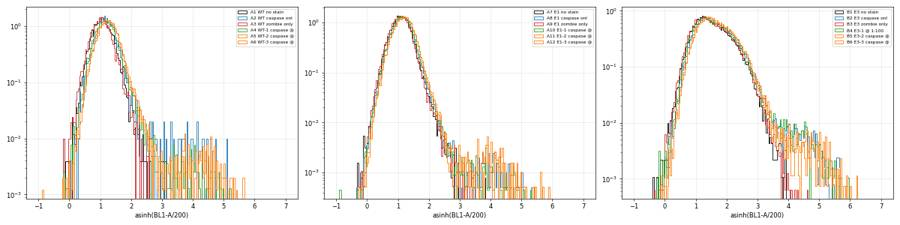
52
tool call · Read
{
"file_path": "/task/work/ov_FSC-A_bl1.png"
}53
tool output
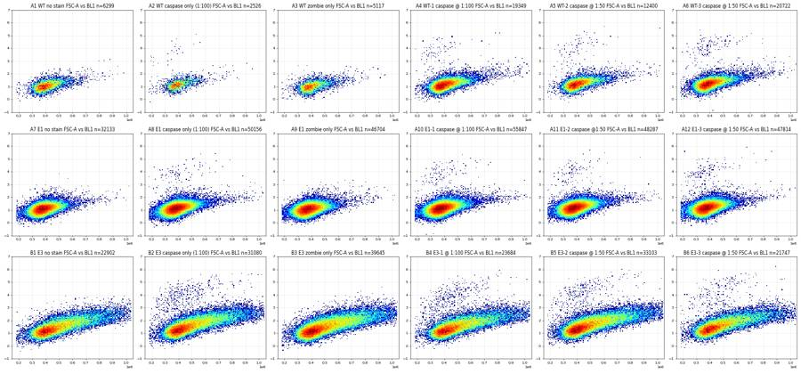
54
tool call · Read
{
"file_path": "/task/work/ov_SSC-A_bl1.png"
}55
tool output
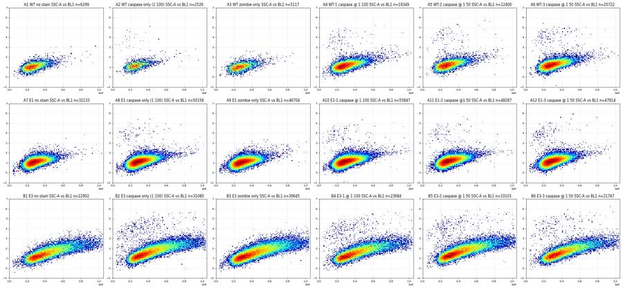
57
tool call · Bash
python3 -I -c " import flowkit as fk, inspect print(fk.__version__) print(inspect.signature(fk.transforms.AsinhTransform.__init__)) print(inspect.signature(fk.transforms.LogicleTransform.__init__)) print(inspect.signature(fk.gates.PolygonGate.__init__)) print(inspect.signature(fk.gates.RectangleGate.__init__)) print(inspect.signature(fk.Dimension.__init__)) print(inspect.signature(fk.GatingStrategy.add_gate)) print(inspect.signature(fk.GatingStrategy.add_transform)) print(inspect.signature(fk.GatingStrategy.gate_sample)) print(inspect.signature(fk.export_gatingml)) "
58
tool output
1.2.3 (self, param_t, param_m, param_a) (self, param_t, param_w, param_m, param_a) (self, gate_name, dimensions, vertices, use_complement=False) (self, gate_name, dimensions, use_complement=False) (self, dimension_id, compensation_ref='uncompensated', transformation_ref=None, range_min=None, range_max=None) (self, gate, gate_path, sample_id=None) (self, transform_id, transform) (self, sample, cache_events=False, verbose=False) (gating_strategy, file_handle, sample_id=None)
60
agent
Building the gating strategy now; first a closer look at where caspase-positive events fall on the viability axis.
61
tool call · Bash
cat > ov6.py <<'EOF'
import sys; sys.path.insert(0,'/task/work')
from load import *
import matplotlib; matplotlib.use('Agg'); import matplotlib.pyplot as plt
from matplotlib.colors import LogNorm
tr = fk.transforms.AsinhTransform(param_t=1048576, param_m=4.0, param_a=0.0)
T = lambda x: tr.apply(np.asarray(x, float))
def pre(df):
m = (df['FSC-A']>180000)&(df['FSC-A']<1040000)&(df['SSC-A']>40000)&(df['SSC-A']<1040000)
rat = df['FSC-H']/df['FSC-A']
m &= (rat>0.37)&(rat<0.8)
return df[m]
print('T of 0,200,1000,5000,1e4,3e4,1e5,1e6:', T([0,200,1000,5000,1e4,3e4,1e5,1e6]).round(3))
fig, axes = plt.subplots(3,6, figsize=(30,14))
for ax,(i,r) in zip(axes.flat, lay.iterrows()):
s, df = load(r.file); d = pre(df)
ax.hist2d(T(d['BL1-A']), T(d['RL3-A']), bins=150, range=[[-0.1,0.8],[-0.1,1.0]], cmap='jet', norm=LogNorm())
ax.set_title(f'{r.well} {r["sample"]} BL1 vs RL3 (asinh T)'); ax.grid(alpha=.3)
plt.tight_layout(); plt.savefig('ov_bl1_rl3_T.png', dpi=45); plt.close()
EOF
python3 -I ov6.py62
tool output
T of 0,200,1000,5000,1e4,3e4,1e5,1e6: [0. 0.092 0.246 0.42 0.495 0.614 0.745 0.995]
63
tool call · Read
{
"file_path": "/task/work/ov_bl1_rl3_T.png"
}64
tool output
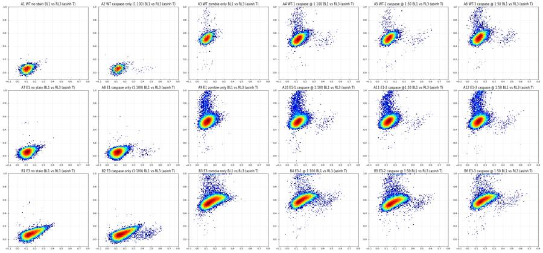
66
tool call · Bash
cat > ov7.py <<'EOF'
import sys; sys.path.insert(0,'/task/work')
from load import *
import matplotlib; matplotlib.use('Agg'); import matplotlib.pyplot as plt
from matplotlib.colors import LogNorm
tr = fk.transforms.AsinhTransform(param_t=1048576, param_m=4.0, param_a=0.0)
T = lambda x: tr.apply(np.asarray(x, float))
def pre(df):
m = (df['FSC-A']>180000)&(df['FSC-A']<1040000)&(df['SSC-A']>40000)&(df['SSC-A']<1040000)
rat = df['FSC-H']/df['FSC-A']
m &= (rat>0.37)&(rat<0.8)
return df[m]
for ch, yr in [('RL3-A',(0.3,1.0)),('BL1-A',(-0.1,0.7))]:
fig, axes = plt.subplots(3,6, figsize=(30,14))
for ax,(i,r) in zip(axes.flat, lay.iterrows()):
s, df = load(r.file); d = pre(df)
ax.hist2d(d['FSC-A'], T(d[ch]), bins=150, range=[[1.5e5,1.05e6],yr], cmap='jet', norm=LogNorm())
ax.set_title(f'{r.well} {r["sample"]} FSC-A vs {ch}'); ax.grid(alpha=.4)
ax.set_yticks(np.arange(yr[0],yr[1]+0.01,0.05))
plt.tight_layout(); plt.savefig(f'ov_fsc_{ch}_T.png', dpi=45); plt.close()
EOF
python3 -I ov7.py67
tool output
(Bash completed with no output)
68
tool call · Read
{
"file_path": "/task/work/ov_fsc_RL3-A_T.png"
}69
tool output
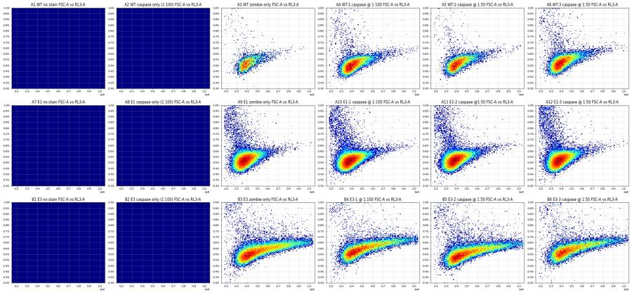
70
tool call · Read
{
"file_path": "/task/work/ov_fsc_BL1-A_T.png"
}71
tool output
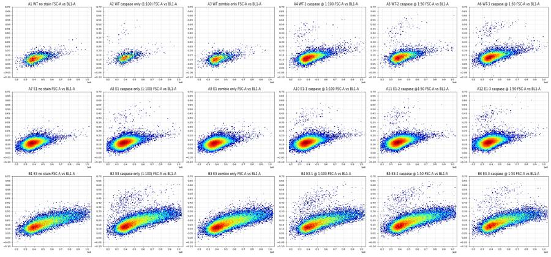
73
tool call · Bash
cat > build.py <<'EOF'
import flowkit as fk, numpy as np
FSC_MAX_OK = 1040000.0 # FSC-A/SSC-A saturate at 1048575
def build():
g = fk.GatingStrategy()
g.add_transform('asinh_fl', fk.transforms.AsinhTransform(param_t=1048576, param_m=4.0, param_a=0.0))
U = 'uncompensated'
# 1. cells: exclude debris (FSC-A < 180k, SSC-A < 40k) and on-scale only (exclude saturated FSC/SSC)
cells = fk.gates.RectangleGate('cells', [
fk.Dimension('FSC-A', compensation_ref=U, range_min=180000.0, range_max=FSC_MAX_OK),
fk.Dimension('SSC-A', compensation_ref=U, range_min=40000.0, range_max=FSC_MAX_OK)])
g.add_gate(cells, gate_path=('root',))
# 2. singlets: FSC-H/FSC-A between ~0.36 and ~0.8
sing = fk.gates.PolygonGate('singlets', [
fk.Dimension('FSC-A', compensation_ref=U), fk.Dimension('FSC-H', compensation_ref=U)],
[(150000.0, 150000.0*0.37), (1050000.0, 1050000.0*0.355), (1050000.0, 1050000.0*0.80), (150000.0, 150000.0*0.88)])
g.add_gate(sing, gate_path=('root','cells'))
# 3. live: Zombie NIR (RL3-A) below the dead-cell cloud; boundary rises with FSC-A because
# dim amine staining of live cells scales with cell size
live_upper = [(150000.0, 0.630), (400000.0, 0.645), (1050000.0, 0.740)]
dims_rl3 = [fk.Dimension('FSC-A', compensation_ref=U), fk.Dimension('RL3-A', compensation_ref=U, transformation_ref='asinh_fl')]
live = fk.gates.PolygonGate('live', dims_rl3,
[(150000.0, -0.3)] + live_upper + [(1050000.0, -0.3)])
g.add_gate(live, gate_path=('root','cells','singlets'))
dead = fk.gates.PolygonGate('dead', dims_rl3,
live_upper + [(1050000.0, 1.3), (150000.0, 1.3)])
g.add_gate(dead, gate_path=('root','cells','singlets'))
# 4. cleaved caspase-3 AF488 (BL1-A) positive; boundary rises with FSC-A to follow the
# size-dependent autofluorescence of large (E3) cells
casp_lower = [(150000.0, 0.300), (450000.0, 0.300), (1050000.0, 0.430)]
dims_bl1 = [fk.Dimension('FSC-A', compensation_ref=U), fk.Dimension('BL1-A', compensation_ref=U, transformation_ref='asinh_fl')]
cpos = fk.gates.PolygonGate('casp3_pos', dims_bl1, casp_lower + [(1050000.0, 1.3), (150000.0, 1.3)])
g.add_gate(cpos, gate_path=('root','cells','singlets','live'))
cpos2 = fk.gates.PolygonGate('casp3_pos_all_singlets', dims_bl1, casp_lower + [(1050000.0, 1.3), (150000.0, 1.3)])
g.add_gate(cpos2, gate_path=('root','cells','singlets'))
return g
EOF
cat > run_gates.py <<'EOF'
import sys; sys.path.insert(0,'/task/work')
from load import *
from build import build
g = build()
rows=[]
for i,r in lay.iterrows():
s = fk.Sample(os.path.join('/task/inputs/raw', r.file))
res = g.gate_sample(s)
rep = res.report
d = {'well':r.well,'sample':r['sample'][:22],'all':s.event_count}
for _,q in rep.iterrows(): d[q.gate_name]=q['count']
rows.append(d)
df = pd.DataFrame(rows)
df['sing%']=100*df.singlets/df.cells; df['live%']=100*df.live/df.singlets; df['dead%']=100*df.dead/df.singlets
df['casp%live']=100*df.casp3_pos/df.live; df['casp%sing']=100*df.casp3_pos_all_singlets/df.singlets
pd.set_option('display.width',250)
print(df.round(2).to_string())
EOF
python3 -I run_gates.py74
tool output
well sample all cells singlets casp3_pos_all_singlets dead live casp3_pos sing% live% dead% casp%live casp%sing 0 A1 WT no stain 6969 6381 6318 0 0 6318 0 99.01 100.00 0.00 0.00 0.00 1 A2 WT caspase only (1:100 3149 2553 2538 24 0 2538 24 99.41 100.00 0.00 0.95 0.95 2 A3 WT zombie only 5742 5177 5136 0 90 5046 0 99.21 98.25 1.75 0.00 0.00 3 A4 WT-1 caspase @ 1:100 20776 19752 19448 93 360 19088 92 98.46 98.15 1.85 0.48 0.48 4 A5 WT-2 caspase @ 1:50 13119 12614 12454 80 171 12283 79 98.73 98.63 1.37 0.64 0.64 5 A6 WT-3 caspase @ 1:50 21946 21067 20817 132 525 20292 125 98.81 97.48 2.52 0.62 0.63 6 A7 E1 no stain 33911 32590 32256 4 0 32256 4 98.98 100.00 0.00 0.01 0.01 7 A8 E1 caspase only (1:100 52749 51147 50355 87 0 50355 87 98.45 100.00 0.00 0.17 0.17 8 A9 E1 zombie only 49297 47535 46940 8 1445 45495 8 98.75 96.92 3.08 0.02 0.02 9 A10 E1-1 caspase @ 1:100 58936 56978 56139 112 1746 54393 104 98.53 96.89 3.11 0.19 0.20 10 A11 E1-2 caspase @1:50 51193 49171 48519 108 1418 47100 101 98.67 97.08 2.92 0.21 0.22 11 A12 E1-3 caspase @ 1:50 51047 48625 48001 157 1784 46217 152 98.72 96.28 3.72 0.33 0.33 12 B1 E3 no stain 26935 23444 23077 35 0 23077 35 98.43 100.00 0.00 0.15 0.15 13 B2 E3 caspase only (1:100 36048 31795 31283 457 0 31283 457 98.39 100.00 0.00 1.46 1.46 14 B3 E3 zombie only 46022 40717 39954 74 1357 38596 64 98.13 96.60 3.40 0.17 0.19 15 B4 E3-1 @ 1:100 27503 24268 23867 377 1199 22668 333 98.35 94.98 5.02 1.47 1.58 16 B5 E3-2 caspase @ 1:50 37596 33951 33352 366 1131 32221 341 98.24 96.61 3.39 1.06 1.10 17 B6 E3-3 caspase @ 1:50 24797 22253 21925 247 1038 20886 215 98.53 95.26 4.73 1.03 1.13
76
tool call · Bash
cat > qc_time.py <<'EOF'
import sys; sys.path.insert(0,'/task/work')
from load import *
from build import build
g = build()
tr = fk.transforms.AsinhTransform(param_t=1048576, param_m=4.0, param_a=0.0)
for i,r in lay.iterrows():
s, df = load(r.file)
res = g.gate_sample(s)
m = res.get_gate_membership('singlets')
t = df['Time'].values
tmax = t.max()
bins = np.linspace(0, tmax, 11)
cnt_all = np.histogram(t, bins)[0]
cnt = np.histogram(t[m], bins)[0]
med_bl1 = [np.median(df['BL1-A'].values[m & (t>=bins[k]) & (t<bins[k+1])]) for k in range(10)]
med_fsc = [np.median(df['FSC-A'].values[m & (t>=bins[k]) & (t<bins[k+1])]) for k in range(10)]
print(r.well.ljust(4), 'tmax %.1f'%tmax, 'rate/bin', cnt_all.tolist(), 'cv %.2f'%(cnt_all.std()/cnt_all.mean()),
'BL1med', np.round(med_bl1).astype(int).tolist(), 'FSCmed/1k', (np.array(med_fsc)/1000).astype(int).tolist())
EOF
python3 -I qc_time.py77
tool output
A1 tmax 97.9 rate/bin [430, 609, 657, 665, 812, 863, 873, 737, 903, 420] cv 0.24 BL1med [253, 250, 253, 245, 254, 260, 248, 254, 258, 252] FSCmed/1k [412, 399, 399, 400, 397, 400, 398, 404, 411, 408] A2 tmax 97.8 rate/bin [245, 265, 321, 332, 369, 392, 311, 316, 386, 212] cv 0.18 BL1med [271, 302, 283, 301, 274, 300, 280, 296, 293, 296] FSCmed/1k [399, 399, 397, 390, 396, 389, 387, 403, 405, 410] A3 tmax 97.0 rate/bin [312, 488, 556, 567, 586, 770, 629, 615, 555, 664] cv 0.20 BL1med [230, 246, 243, 236, 253, 248, 251, 252, 240, 238] FSCmed/1k [401, 397, 397, 396, 392, 393, 394, 395, 402, 409] A4 tmax 97.0 rate/bin [1298, 1613, 1838, 2069, 2278, 2762, 2279, 2263, 2053, 2323] cv 0.19 BL1med [279, 288, 289, 295, 286, 291, 290, 291, 290, 294] FSCmed/1k [402, 398, 403, 405, 397, 395, 405, 397, 405, 410] A5 tmax 96.8 rate/bin [951, 1135, 1215, 1299, 1417, 1766, 1550, 1342, 1533, 911] cv 0.20 BL1med [314, 316, 314, 308, 311, 316, 312, 312, 317, 314] FSCmed/1k [410, 404, 405, 402, 402, 396, 396, 404, 420, 408] A6 tmax 97.9 rate/bin [1325, 1800, 2103, 2124, 2276, 2960, 2398, 2370, 2225, 2365] cv 0.18 BL1med [318, 323, 321, 321, 322, 326, 320, 321, 317, 325] FSCmed/1k [398, 394, 396, 394, 397, 390, 390, 393, 398, 405] A7 tmax 97.9 rate/bin [1803, 2634, 3140, 3152, 3481, 4592, 4197, 4192, 3201, 3519] cv 0.23 BL1med [258, 259, 266, 260, 264, 265, 265, 263, 260, 268] FSCmed/1k [385, 380, 383, 383, 382, 374, 378, 378, 383, 392] A8 tmax 98.0 rate/bin [3753, 4511, 4911, 5042, 6332, 7282, 6583, 5530, 5283, 3522] cv 0.22 BL1med [272, 277, 276, 277, 276, 278, 279, 274, 279, 278] FSCmed/1k [390, 383, 385, 382, 380, 379, 382, 387, 393, 381] A9 tmax 98.0 rate/bin [2869, 4014, 4485, 4545, 4899, 6403, 5732, 5489, 5199, 5662] cv 0.19 BL1med [251, 254, 256, 254, 255, 259, 257, 255, 253, 261] FSCmed/1k [384, 375, 375, 374, 374, 371, 376, 375, 381, 385] A10 tmax 97.9 rate/bin [3988, 5032, 5599, 5723, 6871, 8221, 7413, 6101, 5446, 4542] cv 0.21 BL1med [275, 277, 281, 275, 278, 280, 280, 279, 279, 284] FSCmed/1k [381, 376, 376, 377, 376, 374, 375, 375, 384, 391] A11 tmax 97.2 rate/bin [3119, 4206, 4638, 4900, 5361, 6687, 5859, 5759, 5139, 5525] cv 0.18 BL1med [292, 299, 295, 295, 294, 294, 295, 297, 297, 300] FSCmed/1k [386, 381, 379, 380, 377, 375, 379, 381, 386, 393] A12 tmax 98.0 rate/bin [3190, 4244, 4760, 5233, 5740, 6598, 5942, 5344, 4675, 5321] cv 0.18 BL1med [292, 289, 290, 296, 294, 293, 296, 291, 294, 295] FSCmed/1k [381, 372, 373, 376, 372, 370, 374, 371, 382, 390] B1 tmax 97.1 rate/bin [1445, 1880, 2530, 2317, 2874, 3601, 3133, 3098, 2833, 3224] cv 0.23 BL1med [373, 388, 403, 394, 419, 391, 403, 398, 387, 437] FSCmed/1k [458, 464, 469, 469, 478, 460, 466, 463, 466, 498] B2 tmax 98.0 rate/bin [2154, 2657, 3231, 3568, 4338, 4903, 4302, 3841, 4118, 2936] cv 0.23 BL1med [423, 428, 437, 442, 453, 456, 446, 446, 469, 480] FSCmed/1k [458, 455, 453, 454, 463, 464, 460, 464, 480, 488] B3 tmax 98.0 rate/bin [2823, 3282, 4033, 4569, 5286, 6480, 5507, 4809, 5451, 3782] cv 0.23 BL1med [375, 378, 388, 383, 403, 393, 390, 403, 414, 436] FSCmed/1k [465, 462, 466, 466, 473, 463, 464, 470, 482, 499] B4 tmax 97.1 rate/bin [1485, 1991, 2526, 2645, 2849, 3486, 3128, 3128, 2719, 3546] cv 0.22 BL1med [382, 403, 427, 444, 447, 435, 434, 442, 415, 474] FSCmed/1k [460, 457, 470, 485, 482, 474, 467, 478, 468, 505] B5 tmax 98.0 rate/bin [2357, 2857, 3140, 3532, 3858, 4914, 4432, 4203, 3669, 4634] cv 0.21 BL1med [460, 471, 456, 479, 469, 469, 483, 482, 464, 509] FSCmed/1k [464, 468, 462, 464, 461, 461, 461, 461, 464, 486] B6 tmax 97.2 rate/bin [1306, 1784, 2198, 2360, 2776, 3220, 2905, 2693, 2462, 3093] cv 0.23 BL1med [438, 454, 475, 470, 468, 464, 474, 465, 458, 521] FSCmed/1k [446, 459, 463, 463, 463, 453, 456, 456, 462, 494]
79
agent
Acquisition is stable in every well (no clogs, no drift). Next I'm comparing caspase-positive cluster brightness between 1:50 and 1:100 and checking the gate overlays.
80
tool call · Bash
cat > mfi.py <<'EOF'
import sys; sys.path.insert(0,'/task/work')
from load import *
from build import build
g = build()
rows=[]
for i,r in lay.iterrows():
s, df = load(r.file)
res = g.gate_sample(s)
live = res.get_gate_membership('live'); pos = res.get_gate_membership('casp3_pos')
neg = live & ~pos
bl = df['BL1-A'].values
mp = np.median(bl[pos]) if pos.sum() else np.nan
mn = np.median(bl[neg]); q = np.percentile(bl[neg],[15.87,50,84.13]); rsd = (q[2]-q[0])/2
p99 = np.percentile(bl[neg], 99.5)
rows.append(dict(well=r.well, sample=r['sample'][:24], npos=pos.sum(), med_pos=mp, med_neg=mn, rSD_neg=rsd,
SI=(mp-mn)/(2*rsd), ratio=mp/mn, neg_p99_5=p99, fsc_pos=np.median(df['FSC-A'].values[pos]) if pos.sum() else np.nan,
fsc_neg=np.median(df['FSC-A'].values[neg])))
print(pd.DataFrame(rows).round(1).to_string())
EOF
python3 -I mfi.py81
tool output
well sample npos med_pos med_neg rSD_neg SI ratio neg_p99_5 fsc_pos fsc_neg 0 A1 WT no stain 0 NaN 253.0 102.5 NaN NaN 807.0 NaN 402635.0 1 A2 WT caspase only (1:100) 24 4361.0 289.0 106.0 19.2 15.1 922.0 378494.5 397631.5 2 A3 WT zombie only 0 NaN 244.0 96.7 NaN NaN 733.8 NaN 398051.0 3 A4 WT-1 caspase @ 1:100 92 5161.5 289.0 113.5 21.5 17.9 1007.1 365274.5 403349.0 4 A5 WT-2 caspase @ 1:50 79 6136.0 313.0 119.0 24.5 19.6 1036.9 399045.0 405665.0 5 A6 WT-3 caspase @ 1:50 125 6514.0 321.0 119.5 25.9 20.3 1064.0 393484.0 397007.0 6 A7 E1 no stain 4 2515.0 263.0 99.0 11.4 9.6 787.5 448961.0 381834.5 7 A8 E1 caspase only (1:100) 87 5186.0 277.0 105.0 23.4 18.7 855.0 398756.0 384604.5 8 A9 E1 zombie only 8 2333.5 257.0 96.5 10.8 9.1 792.6 487610.5 378683.0 9 A10 E1-1 caspase @ 1:100 104 4725.5 279.0 104.0 21.4 16.9 847.0 382240.0 379756.0 10 A11 E1-2 caspase @1:50 101 5077.0 296.0 110.5 21.6 17.2 867.0 365926.0 383601.0 11 A12 E1-3 caspase @ 1:50 152 4923.0 293.0 110.5 21.0 16.8 885.7 358993.5 378302.0 12 B1 E3 no stain 35 2989.0 400.0 285.5 4.5 7.5 2154.2 619559.0 469674.0 13 B2 E3 caspase only (1:100) 457 5213.0 444.5 316.0 7.5 11.7 2302.5 466436.0 464568.5 14 B3 E3 zombie only 64 3392.0 394.0 291.5 5.1 8.6 2220.7 667391.5 471728.5 15 B4 E3-1 @ 1:100 333 4674.0 422.0 296.0 7.2 11.1 2211.0 462605.0 476417.0 16 B5 E3-2 caspase @ 1:50 341 5639.0 470.0 323.5 8.0 12.0 2345.4 462396.0 467002.0 17 B6 E3-3 caspase @ 1:50 215 5523.0 463.0 312.5 8.1 11.9 2305.5 470654.0 463483.0
83
tool call · Bash
cat > overlay.py <<'EOF'
import sys; sys.path.insert(0,'/task/work')
from load import *
from build import build
import matplotlib; matplotlib.use('Agg'); import matplotlib.pyplot as plt
from matplotlib.colors import LogNorm
g = build()
tr = fk.transforms.AsinhTransform(param_t=1048576, param_m=4.0, param_a=0.0)
T = lambda x: tr.apply(np.asarray(x, float))
def verts(name, path):
gt = g.get_gate(name, gate_path=path); return np.array(gt.vertices + [gt.vertices[0]])
P_s = ('root','cells','singlets')
fig, axes = plt.subplots(4,18, figsize=(72,16))
for j,(i,r) in enumerate(lay.iterrows()):
s, df = load(r.file); res = g.gate_sample(s)
cm = res.get_gate_membership('cells'); sm = res.get_gate_membership('singlets'); lm = res.get_gate_membership('live')
ax = axes[0,j]; ax.hist2d(df['FSC-A'], df['SSC-A'], bins=150, range=[[0,1.05e6],[0,1.05e6]], cmap='jet', norm=LogNorm())
ax.add_patch(plt.Rectangle((180000,40000), 1040000-180000, 1040000-40000, fill=False, color='k', lw=2))
ax.set_title(f'{r.well} {r["sample"]}', fontsize=10)
ax = axes[1,j]; d=df[cm]; ax.hist2d(d['FSC-A'], d['FSC-H'], bins=150, range=[[1.5e5,1.05e6],[0,6e5]], cmap='jet', norm=LogNorm())
v = verts('singlets', ('root','cells')); ax.plot(v[:,0], v[:,1], 'k-', lw=2)
ax = axes[2,j]; d=df[sm]; ax.hist2d(d['FSC-A'], T(d['RL3-A']), bins=150, range=[[1.5e5,1.05e6],[-0.1,1.05]], cmap='jet', norm=LogNorm())
v = verts('live', P_s); ax.plot(v[:,0], v[:,1], 'k-', lw=2); ax.set_ylim(-0.1,1.05)
ax = axes[3,j]; d=df[lm]; ax.hist2d(d['FSC-A'], T(d['BL1-A']), bins=150, range=[[1.5e5,1.05e6],[-0.1,0.8]], cmap='jet', norm=LogNorm())
v = verts('casp3_pos', P_s+('live',)); ax.plot(v[:,0], v[:,1], 'k-', lw=2); ax.set_ylim(-0.1,0.8)
plt.tight_layout(); plt.savefig('overlay.png', dpi=30); plt.close()
EOF
python3 -I overlay.py84
tool output
(Bash completed with no output)
85
tool call · Read
{
"file_path": "/task/work/overlay.png"
}86
tool output
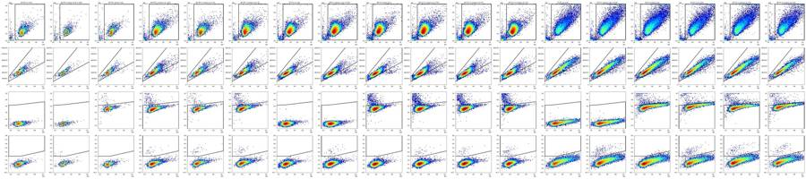
88
tool call · Bash
cat > overlay2.py <<'EOF'
import sys; sys.path.insert(0,'/task/work')
from load import *
from build import build
import matplotlib; matplotlib.use('Agg'); import matplotlib.pyplot as plt
from matplotlib.colors import LogNorm
g = build()
tr = fk.transforms.AsinhTransform(param_t=1048576, param_m=4.0, param_a=0.0)
T = lambda x: tr.apply(np.asarray(x, float))
def verts(name, path):
gt = g.get_gate(name, gate_path=path); return np.array(gt.vertices + [gt.vertices[0]])
P_s = ('root','cells','singlets')
wells = sys.argv[1].split(',')
fig, axes = plt.subplots(3,len(wells), figsize=(4.5*len(wells),12))
for j,w in enumerate(wells):
r = lay[lay.well==w].iloc[0]
s, df = load(r.file); res = g.gate_sample(s)
cm = res.get_gate_membership('cells'); sm = res.get_gate_membership('singlets'); lm = res.get_gate_membership('live')
ax = axes[0,j]; d=df[cm]; ax.hist2d(d['FSC-A'], d['FSC-H'], bins=150, range=[[1.5e5,1.05e6],[0,6e5]], cmap='jet', norm=LogNorm())
v = verts('singlets', ('root','cells')); ax.plot(v[:,0], v[:,1], 'k-', lw=1.5); ax.set_title(f'{w} {r["sample"]}')
ax = axes[1,j]; d=df[sm]; ax.hist2d(d['FSC-A'], T(d['RL3-A']), bins=150, range=[[1.5e5,1.05e6],[0.3,1.05]], cmap='jet', norm=LogNorm())
v = verts('live', P_s); ax.plot(v[:,0], v[:,1], 'k-', lw=1.5); ax.set_ylim(0.3,1.05); ax.grid(alpha=.3)
ax = axes[2,j]; d=df[lm]; ax.hist2d(d['FSC-A'], T(d['BL1-A']), bins=150, range=[[1.5e5,1.05e6],[-0.1,0.7]], cmap='jet', norm=LogNorm())
v = verts('casp3_pos', P_s+('live',)); ax.plot(v[:,0], v[:,1], 'k-', lw=1.5); ax.set_ylim(-0.1,0.7); ax.grid(alpha=.3)
plt.tight_layout(); plt.savefig(sys.argv[2], dpi=55); plt.close()
EOF
python3 -I overlay2.py B1,B2,B3,B4,B5,B6 ov_e3.png89
tool output
(Bash completed with no output)
90
tool call · Read
{
"file_path": "/task/work/ov_e3.png"
}91
tool output
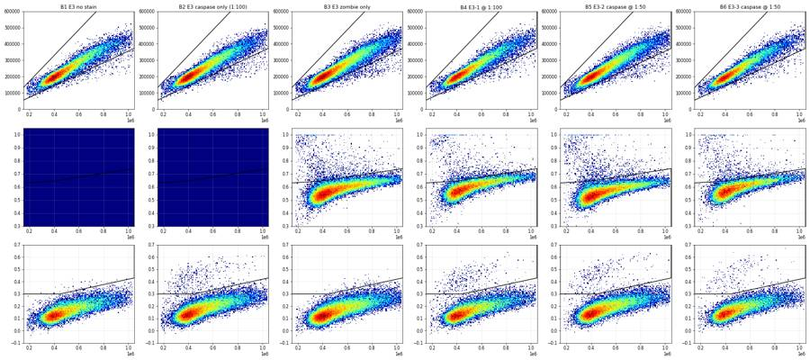
93
tool call · Bash
cat > tune.py <<'EOF'
import sys; sys.path.insert(0,'/task/work')
from load import *
from matplotlib.path import Path
tr = fk.transforms.AsinhTransform(param_t=1048576, param_m=4.0, param_a=0.0)
T = lambda x: tr.apply(np.asarray(x, float))
from build import build
g = build()
data = {}
for i,r in lay.iterrows():
s, df = load(r.file); res = g.gate_sample(s)
lm = res.get_gate_membership('live')
data[r.well] = (df['FSC-A'].values[lm], T(df['BL1-A'].values[lm]))
cands = {
'cur': [(150e3,.30),(450e3,.30),(1050e3,.43)],
'steep': [(150e3,.30),(450e3,.30),(650e3,.37),(1050e3,.45)],
'steep2': [(150e3,.30),(400e3,.30),(650e3,.38),(1050e3,.46)],
'flat31': [(150e3,.31),(450e3,.31),(650e3,.37),(1050e3,.45)],
}
out = {}
for k,low in cands.items():
p = Path(low + [(1050e3,1.3),(150e3,1.3)])
out[k] = {w: 100*p.contains_points(np.c_[x,y]).mean() for w,(x,y) in data.items()}
print(pd.DataFrame(out).round(3).to_string())
EOF
python3 -I tune.py94
tool output
cur steep steep2 flat31 A1 0.000 0.000 0.000 0.000 A2 0.946 0.946 0.946 0.946 A3 0.000 0.000 0.000 0.000 A4 0.482 0.477 0.466 0.456 A5 0.643 0.643 0.635 0.627 A6 0.616 0.601 0.591 0.586 A7 0.012 0.012 0.012 0.012 A8 0.173 0.171 0.171 0.169 A9 0.018 0.009 0.007 0.009 A10 0.191 0.191 0.189 0.189 A11 0.214 0.214 0.212 0.212 A12 0.329 0.325 0.320 0.314 B1 0.152 0.091 0.074 0.065 B2 1.461 1.359 1.304 1.307 B3 0.166 0.088 0.052 0.080 B4 1.469 1.381 1.346 1.341 B5 1.058 0.956 0.919 0.903 B6 1.029 0.962 0.929 0.934
96
thinking
A steeper caspase boundary at large cell size halves the E3 background in the controls (0.17% to 0.09%) with little loss of positive signal. I'm applying that and widening the live gate for large E3 cells.
97
tool call · Bash
python3 - <<'EOF'
import re
s = open('build.py').read()
s = s.replace("live_upper = [(150000.0, 0.630), (400000.0, 0.645), (1050000.0, 0.740)]",
"live_upper = [(150000.0, 0.630), (400000.0, 0.650), (1050000.0, 0.760)]")
s = s.replace("casp_lower = [(150000.0, 0.300), (450000.0, 0.300), (1050000.0, 0.430)]",
"casp_lower = [(150000.0, 0.300), (450000.0, 0.300), (650000.0, 0.370), (1050000.0, 0.450)]")
open('build.py','w').write(s)
EOF
grep -n "upper =\|lower =" build.py && python3 -I run_gates.py && python3 -I overlay2.py B3,B4,A9,A12,A3,A6 ov_chk.png98
tool output
19: live_upper = [(150000.0, 0.630), (400000.0, 0.650), (1050000.0, 0.760)] 29: casp_lower = [(150000.0, 0.300), (450000.0, 0.300), (650000.0, 0.370), (1050000.0, 0.450)] well sample all cells singlets casp3_pos_all_singlets dead live casp3_pos sing% live% dead% casp%live casp%sing 0 A1 WT no stain 6969 6381 6318 0 0 6318 0 99.01 100.00 0.00 0.00 0.00 1 A2 WT caspase only (1:100 3149 2553 2538 24 0 2538 24 99.41 100.00 0.00 0.95 0.95 2 A3 WT zombie only 5742 5177 5136 0 88 5048 0 99.21 98.29 1.71 0.00 0.00 3 A4 WT-1 caspase @ 1:100 20776 19752 19448 92 352 19096 91 98.46 98.19 1.81 0.48 0.47 4 A5 WT-2 caspase @ 1:50 13119 12614 12454 80 166 12288 79 98.73 98.67 1.33 0.64 0.64 5 A6 WT-3 caspase @ 1:50 21946 21067 20817 129 509 20308 122 98.81 97.55 2.45 0.60 0.62 6 A7 E1 no stain 33911 32590 32256 4 0 32256 4 98.98 100.00 0.00 0.01 0.01 7 A8 E1 caspase only (1:100 52749 51147 50355 86 0 50355 86 98.45 100.00 0.00 0.17 0.17 8 A9 E1 zombie only 49297 47535 46940 4 1406 45534 4 98.75 97.00 3.00 0.01 0.01 9 A10 E1-1 caspase @ 1:100 58936 56978 56139 112 1701 54438 106 98.53 96.97 3.03 0.19 0.20 10 A11 E1-2 caspase @1:50 51193 49171 48519 107 1384 47134 101 98.67 97.15 2.85 0.21 0.22 11 A12 E1-3 caspase @ 1:50 51047 48625 48001 155 1747 46254 152 98.72 96.36 3.64 0.33 0.32 12 B1 E3 no stain 26935 23444 23077 21 0 23077 21 98.43 100.00 0.00 0.09 0.09 13 B2 E3 caspase only (1:100 36048 31795 31283 425 0 31283 425 98.39 100.00 0.00 1.36 1.36 14 B3 E3 zombie only 46022 40717 39954 44 1191 38762 35 98.13 97.02 2.98 0.09 0.11 15 B4 E3-1 @ 1:100 27503 24268 23867 353 965 22902 323 98.35 95.96 4.04 1.41 1.48 16 B5 E3-2 caspase @ 1:50 37596 33951 33352 332 1040 32312 312 98.24 96.88 3.12 0.97 1.00 17 B6 E3-3 caspase @ 1:50 24797 22253 21925 231 869 21055 206 98.53 96.03 3.96 0.98 1.05
99
tool call · Read
{
"file_path": "/task/work/ov_chk.png"
}100
tool output
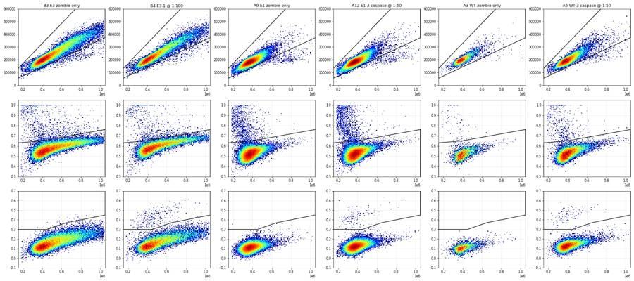
102
tool call · Bash
python3 -I - <<'EOF'
import sys; sys.path.insert(0,'/task/work')
from load import *
from build import build
g = build()
tr = fk.transforms.AsinhTransform(param_t=1048576, param_m=4.0, param_a=0.0)
for i,r in lay.iterrows():
s, df = load(r.file); res = g.gate_sample(s)
sm = res.get_gate_membership('singlets')
rl = tr.apply(df['RL3-A'].values)
if 'zombie' in r['sample'] or '@' in r['sample']: continue
print(r.well, r['sample'], 'singlets with RL3 T>0.35 (zombie-stained-like):', (sm&(rl>0.35)).sum(), 'of', sm.sum())
s, df = load(lay[lay.well=='B5'].file.iloc[0])
h,_ = np.histogram(df['Time'], bins=np.arange(0,99,1)); print('B5 per-second counts first 10 s:', h[:10], 'median', np.median(h))
EOF103
tool output
A1 WT no stain singlets with RL3 T>0.35 (zombie-stained-like): 0 of 6318 A2 WT caspase only (1:100) singlets with RL3 T>0.35 (zombie-stained-like): 0 of 2538 A7 E1 no stain singlets with RL3 T>0.35 (zombie-stained-like): 6 of 32256 A8 E1 caspase only (1:100) singlets with RL3 T>0.35 (zombie-stained-like): 4 of 50355 B1 E3 no stain singlets with RL3 T>0.35 (zombie-stained-like): 7 of 23077 B2 E3 caspase only (1:100) singlets with RL3 T>0.35 (zombie-stained-like): 5 of 31283 B5 per-second counts first 10 s: [ 1 4 94 683 392 231 264 242 248 259] median 384.0
105
agent
Gates are settled. Writing `gates.xml` and computing `counts.csv` from the reloaded XML, so the counts are exactly what the saved gates reproduce.
106
tool call · Bash
cat > export.py <<'EOF'
import sys; sys.path.insert(0,'/task/work')
from load import *
from build import build
g = build()
with open('/task/outputs/gates.xml','wb') as fh:
fk.export_gatingml(g, fh)
g2 = fk.parse_gating_xml('/task/outputs/gates.xml')
print('reloaded gates:', g2.get_gate_ids())
pops = [('cells','cells','all_events'),('singlets','singlets','cells'),('live','live','singlets'),
('casp3_pos','marker_positive','live'),('dead','other','singlets'),('casp3_pos_all_singlets','other','singlets')]
rows=[]
for i,r in lay.iterrows():
s = fk.Sample(os.path.join('/task/inputs/raw', r.file))
res = g2.gate_sample(s); res0 = g.gate_sample(s)
rep = res.report.set_index('gate_name')['count']; rep0 = res0.report.set_index('gate_name')['count']
assert (rep.sort_index()==rep0.sort_index()).all()
cnt = {'all_events': s.event_count, **{k:int(v) for k,v in rep.items()}}
rows.append(dict(file=r.file, well=r.well, population='all_events', role='other', parent='none', count=s.event_count, pct_of_parent=''))
for p, role, par in pops:
c = cnt[p]; pc = cnt[par]
rows.append(dict(file=r.file, well=r.well, population=p, role=role, parent=par, count=c,
pct_of_parent='' if pc==0 else round(100*c/pc, 4)))
pd.DataFrame(rows).to_csv('/task/outputs/counts.csv', index=False)
print(pd.DataFrame(rows).head(14).to_string())
EOF
python3 -I export.py && wc -l /task/outputs/counts.csv && head -c 1500 /task/outputs/gates.xml107
tool output
reloaded gates: [('cells', ('root',)), ('singlets', ('root', 'cells')), ('live', ('root', 'cells', 'singlets')), ('casp3_pos', ('root', 'cells', 'singlets', 'live')), ('dead', ('root', 'cells', 'singlets')), ('casp3_pos_all_singlets', ('root', 'cells', 'singlets'))]
file well population role parent count pct_of_parent
0 Caspase_h4_mlk(4)_caspase_Group_A1_WT_no stain.fcs A1 all_events other none 6969
1 Caspase_h4_mlk(4)_caspase_Group_A1_WT_no stain.fcs A1 cells cells all_events 6381 91.5626
2 Caspase_h4_mlk(4)_caspase_Group_A1_WT_no stain.fcs A1 singlets singlets cells 6318 99.0127
3 Caspase_h4_mlk(4)_caspase_Group_A1_WT_no stain.fcs A1 live live singlets 6318 100.0
4 Caspase_h4_mlk(4)_caspase_Group_A1_WT_no stain.fcs A1 casp3_pos marker_positive live 0 0.0
5 Caspase_h4_mlk(4)_caspase_Group_A1_WT_no stain.fcs A1 dead other singlets 0 0.0
6 Caspase_h4_mlk(4)_caspase_Group_A1_WT_no stain.fcs A1 casp3_pos_all_singlets other singlets 0 0.0
7 Caspase_h4_mlk(4)_caspase_Group_A2_Wt_caspase_1-100.fcs A2 all_events other none 3149
8 Caspase_h4_mlk(4)_caspase_Group_A2_Wt_caspase_1-100.fcs A2 cells cells all_events 2553 81.0734
9 Caspase_h4_mlk(4)_caspase_Group_A2_Wt_caspase_1-100.fcs A2 singlets singlets cells 2538 99.4125
10 Caspase_h4_mlk(4)_caspase_Group_A2_Wt_caspase_1-100.fcs A2 live live singlets 2538 100.0
11 Caspase_h4_mlk(4)_caspase_Group_A2_Wt_caspase_1-100.fcs A2 casp3_pos marker_positive live 24 0.9456
12 Caspase_h4_mlk(4)_caspase_Group_A2_Wt_caspase_1-100.fcs A2 dead other singlets 0 0.0
13 Caspase_h4_mlk(4)_caspase_Group_A2_Wt_caspase_1-100.fcs A2 casp3_pos_all_singlets other singlets 24 0.9456
127 /task/outputs/counts.csv
<?xml version='1.0' encoding='UTF-8'?>
<gating:Gating-ML xmlns:gating="http://www.isac-net.org/std/Gating-ML/v2.0/gating" xmlns:data-type="http://www.isac-net.org/std/Gating-ML/v2.0/datatypes" xmlns:transforms="http://www.isac-net.org/std/Gating-ML/v2.0/transformations">
<transforms:transformation transforms:id="asinh_fl">
<transforms:fasinh transforms:T="1048576" transforms:M="4.0" transforms:A="0.0"/>
</transforms:transformation>
<gating:RectangleGate gating:id="cells">
<gating:dimension gating:compensation-ref="uncompensated" gating:min="180000.0" gating:max="1040000.0">
<data-type:fcs-dimension data-type:name="FSC-A"/>
</gating:dimension>
<gating:dimension gating:compensation-ref="uncompensated" gating:min="40000.0" gating:max="1040000.0">
<data-type:fcs-dimension data-type:name="SSC-A"/>
</gating:dimension>
</gating:RectangleGate>
<gating:PolygonGate gating:id="singlets" gating:parent_id="cells">
<gating:dimension gating:compensation-ref="uncompensated">
<data-type:fcs-dimension data-type:name="FSC-A"/>
</gating:dimension>
<gating:dimension gating:compensation-ref="uncompensated">
<data-type:fcs-dimension data-type:name="FSC-H"/>
</gating:dimension>
<gating:vertex>
<gating:coordinate data-type:value="150000.0"/>
<gating:coordinate data-type:value="55500.0"/>
</gating:vertex>
<gating:vertex>
<gating:coordinate data-type:value="1050000.0"/>
<gating:coordinate data-type109
tool call · Skill
{
"skill": "dataviz"
}110
tool output
Launching skill: dataviz
111
tool call · Bash
cd /tmp/claude-0/bundled-skills/2.1.322/861c0b7259a1084cfe95b106d085b712/dataviz && sed -n 1,200p references/palette.md | head -120
112
tool output
# Reference palette
This is the **reference instance** of the data-viz method: every parameter the
method needs, filled in with a validated default palette. The rest of the skill
is system-agnostic - **to target your brand, substitute this file's values** and
re-run the validator. Nothing else changes.
## How to use these values
Everything below is plain hex. In an HTML chart, **define the slots you use as
CSS custom properties in a local `<style>` block** at the top of the file, then
reference them by role throughout - so the light/dark values swap in one place,
and the chart body is written against roles rather than raw hex:
```css
.viz-root {
color-scheme: light;
--surface-1: #fcfcfb; /* chart surface */
--text-primary: #0b0b0b;
--text-secondary: #52514e;
--series-1: #2a78d6; /* categorical slot 1 */
/* ...only the roles this chart uses */
}
@media (prefers-color-scheme: dark) {
:root:where(:not([data-theme="light"])) .viz-root {
color-scheme: dark;
--surface-1: #1a1a19;
--text-primary: #f0efec;
--text-secondary: #c3c2b7;
--series-1: #3987e5;
}
}
:root[data-theme="dark"] .viz-root {
color-scheme: dark;
--surface-1: #1a1a19;
--text-primary: #f0efec;
--text-secondary: #c3c2b7;
--series-1: #3987e5;
}
```
Declare the dark values under both scopes as above - the media query covers
the OS setting; the `data-theme` scope covers the viewer's theme toggle,
which must win both ways (the `:not(...)` guard lets a light stamp beat
OS-dark; `:where()` keeps the media block below the toggle scope).
## Categorical palette
Both modes are selected. The dark column is the same eight hues stepped for the
dark surface, not a separate palette:
| Slot | Hue | Light | Dark |
|------|-----|-------|------|
| 1 | blue | `#2a78d6` | `#3987e5` |
| 2 | orange | `#eb6834` | `#d95926` |
| 3 | aqua | `#1baf7a` | `#199e70` |
| 4 | yellow | `#eda100` | `#c98500` |
| 5 | magenta | `#e87ba4` | `#d55181` |
| 6 | green | `#008300` | `#008300` |
| 7 | violet | `#6250d6` | `#9085e9` |
| 8 | red | `#e34948` | `#e66767` |
This order passes every hard gate in both modes on the default *adjacent*
pairlist (stacks, bars, lines): worst adjacent CVD Delta E 9.1 light / 8.4 dark
(OKLab ×100, >=8 target), worst adjacent normal-vision Delta E 19.6 light / 19.3
dark (>=15 floor). Under `--pairs all` (scatter, bubble, choropleth, small
multiples) the full eight cannot clear the floors - with all 28 pairs in
play no ordering can (the pairlist no longer depends on order), and
re-stepping is off the table by the documented-palette rule - so those
chart forms carry a series cap: **the first three slots validate all-pairs
in both modes** (worst pair CVD Delta E 9.2 light / 9.4 dark, normal-vision 24.0
light / 20.9 dark - clear of the CVD warn band). Past three, fold to "Other" or
facet: the fourth slot puts yellow and orange on screen
together, and that pair fails the all-pairs floors (normal-vision 13.7
light; CVD 4.8 dark). Three light-mode slots (magenta, yellow, aqua)
sit below 3:1 contrast on the light surface: the **relief rule** applies (ship
visible direct labels or the table view). The dark steps were chosen for the
dark band (OKLCH L ~ 0.48-0.67, >= 3:1 on the dark surface) and validated as a
set. (Ordering history: adopted July 2026 for its more harmonious opening -
the same eight hues and steps as its predecessor, re-ordered, zero hex
changes. The predecessor validated its first FOUR slots all-pairs, with its
dark run in the 6-8 CVD warn band, so secondary encoding was required there;
this order deliberately trades that fourth slot - yellow now sits beside orange -
for better-looking leading colors. Revisit the trade if yellow<->orange
confusion shows up in real charts with four or more series; undoing it is a
pure re-order. Light slot 7 has since been lightened, `#4a3aa7` -> `#6250d6`
(August 2026); the adjacent-pair figures above are unchanged by that move, the
non-adjacent blue<->violet pair now sits below both floors under `--pairs all`
(normal-vision 10.5, CVD 4.5 - inside the range the series cap already
excludes), and the order enumeration was run with the earlier value.) When you
swap in your own ramps, hold your palette to the full gate.
The slot **ordering** is the CVD-safety mechanism, not cosmetic - candidate
orderings were enumerated and only those clearing every adjacent gate in both
modes kept (see `color-formula.md` § Themes); this default is one of the
passing orders, picked among them for its opening colors. When you swap in
your brand's hues, do the same: run the validator on candidate orderings and
choose only among the passing ones.
## Sequential hue
Default single hue: **blue**, light->dark. When two sequential contexts appear at
once, the second takes the next categorical slot's hue (orange), each as its own
one-hue ramp.
| step | hex | step | hex | step | hex | step | hex |
|---|---|---|---|---|---|---|---|
| 100 | `#cde2fb` | 250 | `#86b6ef` | 400 | `#3987e5` | 550 | `#1c5cab` |
| 150 | `#b7d3f6` | 300 | `#6da7ec` | 450 | `#2a78d6` | 600 | `#184f95` |
| 200 | `#9ec5f4` | 350 | `#5598e7` | 500 | `#256abf` | 650 | `#104281` |
| | | | | | | 700 | `#0d366b` |
The full 100->700 range is for **sequential** encoding (continuous magnitude -
heatmaps, choropleths) where the lightest step means "near zero" and is allowed
to recede toward the surface. For an **ordinal** ramp (discrete ordered marks -
funnel stages, tiers - validated with `--ordinal`), the step nearest the surface
must still clear 2:1: on light, start no lighter than **step 250** (`#86b6ef`,
2.06:1); on dark, go no darker than **step 600** (`#184f95`, 2.15:1).
## Diverging pair
Shell cwd was reset to /task114
agent
Now the condition summary, then the figure.
115
tool call · Bash
mkdir -p /task/work && cd /task/work && cat > summarise.py <<'EOF'
import pandas as pd, numpy as np
from scipy import stats
c = pd.read_csv('/task/outputs/counts.csv')
lay = pd.read_csv('/task/inputs/plate_layout.csv')
pv = c.pivot(index='well', columns='population', values='count')
pv['pct'] = 100*pv['casp3_pos']/pv['live']
pv['pct_sing'] = 100*pv['casp3_pos_all_singlets']/pv['singlets']
pv['dead_pct'] = 100*pv['dead']/pv['singlets']
conds = []
for gl, w in [('WT', ['A1','A2','A3','A4','A5','A6']), ('E1', ['A7','A8','A9','A10','A11','A12']), ('E3', ['B1','B2','B3','B4','B5','B6'])]:
conds += [(f'{gl}_unstained', [w[0]]), (f'{gl}_casp3_only_1to100_noZombie', [w[1]]), (f'{gl}_Zombie_only_FMO', [w[2]]),
(f'{gl}_casp3_1to100_plus_Zombie', [w[3]]), (f'{gl}_casp3_1to50_plus_Zombie', w[4:6]),
(f'{gl}_casp3_stained_pooled_1to100_and_1to50', w[3:6])]
MET = 'casp3_pos / live x 100 (% cleaved caspase-3 AF488+ [BL1-A] of live [Zombie NIR RL3-A dim] singlets; in wells without Zombie NIR the live gate retains all singlets)'
rows=[]
for name, ws in conds:
v = pv.loc[ws,'pct'].values
rows.append(dict(condition=name, wells=';'.join(ws), n_wells_used=len(ws), mean=round(v.mean(),4),
sd='' if len(ws)==1 else round(v.std(ddof=1),4), metric_definition=MET, normalisation_applied='none'))
cs = pd.DataFrame(rows); cs.to_csv('/task/outputs/condition_summary.csv', index=False)
print(cs[['condition','wells','n_wells_used','mean','sd']].to_string())
print(pv[['singlets','live','casp3_pos','pct','pct_sing','dead_pct']].round(3).to_string())
g = {k: pv.loc[w,'pct'].values for k,w in [('WT',['A4','A5','A6']),('E1',['A10','A11','A12']),('E3',['B4','B5','B6'])]}
for a,b in [('WT','E1'),('WT','E3'),('E1','E3')]:
t = stats.ttest_ind(g[a], g[b], equal_var=False); print(a,b,'ratio %.2f'%(g[b].mean()/g[a].mean()), 'diff %.3f'%(g[b].mean()-g[a].mean()), 'welch p=%.4f'%t.pvalue)
# pooled-count chi-square / Fisher on summed events
for a,b,wa,wb in [('WT','E1',['A4','A5','A6'],['A10','A11','A12']),('WT','E3',['A4','A5','A6'],['B4','B5','B6'])]:
pa, la = pv.loc[wa,'casp3_pos'].sum(), pv.loc[wa,'live'].sum(); pb, lb = pv.loc[wb,'casp3_pos'].sum(), pv.loc[wb,'live'].sum()
print(a,b,'pooled events', pa, la, pb, lb, 'chi2 p=%.2e'%stats.chi2_contingency([[pa,la-pa],[pb,lb-pb]])[1])
EOF
python3 -I summarise.py116
tool output
condition wells n_wells_used mean sd 0 WT_unstained A1 1 0.0000 1 WT_casp3_only_1to100_noZombie A2 1 0.9456 2 WT_Zombie_only_FMO A3 1 0.0000 3 WT_casp3_1to100_plus_Zombie A4 1 0.4765 4 WT_casp3_1to50_plus_Zombie A5;A6 2 0.6218 0.0298 5 WT_casp3_stained_pooled_1to100_and_1to50 A4;A5;A6 3 0.5734 0.0865 6 E1_unstained A7 1 0.0124 7 E1_casp3_only_1to100_noZombie A8 1 0.1708 8 E1_Zombie_only_FMO A9 1 0.0088 9 E1_casp3_1to100_plus_Zombie A10 1 0.1947 10 E1_casp3_1to50_plus_Zombie A11;A12 2 0.2715 0.0808 11 E1_casp3_stained_pooled_1to100_and_1to50 A10;A11;A12 3 0.2459 0.0723 12 E3_unstained B1 1 0.0910 13 E3_casp3_only_1to100_noZombie B2 1 1.3586 14 E3_Zombie_only_FMO B3 1 0.0903 15 E3_casp3_1to100_plus_Zombie B4 1 1.4104 16 E3_casp3_1to50_plus_Zombie B5;B6 2 0.9720 0.0091 17 E3_casp3_stained_pooled_1to100_and_1to50 B4;B5;B6 3 1.1181 0.2532 population singlets live casp3_pos pct pct_sing dead_pct well A1 6318 6318 0 0.000 0.000 0.000 A10 56139 54438 106 0.195 0.200 3.030 A11 48519 47134 101 0.214 0.221 2.852 A12 48001 46254 152 0.329 0.323 3.640 A2 2538 2538 24 0.946 0.946 0.000 A3 5136 5048 0 0.000 0.000 1.713 A4 19448 19096 91 0.477 0.473 1.810 A5 12454 12288 79 0.643 0.642 1.333 A6 20817 20308 122 0.601 0.620 2.445 A7 32256 32256 4 0.012 0.012 0.000 A8 50355 50355 86 0.171 0.171 0.000 A9 46940 45534 4 0.009 0.009 2.995 B1 23077 23077 21 0.091 0.091 0.000 B2 31283 31283 425 1.359 1.359 0.000 B3 39954 38762 35 0.090 0.110 2.981 B4 23867 22902 323 1.410 1.479 4.043 B5 33352 32312 312 0.966 0.995 3.118 B6 21925 21055 206 0.978 1.054 3.964 WT E1 ratio 0.43 diff -0.328 welch p=0.0079 WT E3 ratio 1.95 diff 0.545 welch p=0.0528 E1 E3 ratio 4.55 diff 0.872 welch p=0.0204 WT E1 pooled events 292 51692 359 147826 chi2 p=3.56e-28 WT E3 pooled events 292 51692 841 76269 chi2 p=9.54e-24
118
agent
Building the figure: a per-well dot plot of % caspase-3+ (main), example FMO vs stained plots, and a dilution brightness panel.
119
tool call · Bash
cat > figure.py <<'EOF'
import sys; sys.path.insert(0,'/task/work')
from load import *
import matplotlib; matplotlib.use('Agg'); import matplotlib.pyplot as plt
from matplotlib.colors import LogNorm
g = fk.parse_gating_xml('/task/outputs/gates.xml')
tr = fk.transforms.AsinhTransform(param_t=1048576, param_m=4.0, param_a=0.0)
c = pd.read_csv('/task/outputs/counts.csv')
pv = c.pivot(index='well', columns='population', values='count')
pv['pct'] = 100*pv['casp3_pos']/pv['live']
INK, INK2, GRID = '#0b0b0b', '#52514e', '#e4e3df'
GRAY, BLUE, ORANGE = '#8f8e89', '#2a78d6', '#eb6834'
plt.rcParams.update({'font.size':9, 'axes.edgecolor':INK2, 'axes.labelcolor':INK, 'xtick.color':INK2, 'ytick.color':INK2,
'axes.spines.top':False, 'axes.spines.right':False})
fig = plt.figure(figsize=(15, 9.2), facecolor='#fcfcfb')
gs = fig.add_gridspec(2, 4, height_ratios=[1.15, 1], hspace=0.42, wspace=0.32)
axA = fig.add_subplot(gs[0, :3]); axC = fig.add_subplot(gs[0, 3])
# ---- Panel A: dot plot
groups = [('WT', ['A1','A3','A2','A4','A5','A6']), ('PGRN KO E1', ['A7','A9','A8','A10','A11','A12']), ('PGRN KO E3', ['B1','B3','B2','B4','B5','B6'])]
cats = ['Unstained', 'Zombie only\n(caspase FMO)', 'Caspase only\n1:100 (no Zombie)', 'Caspase 1:100\n+ Zombie', 'Caspase 1:50\n+ Zombie']
style = {0:(GRAY,'o','none'), 1:(GRAY,'s','none'), 2:(GRAY,'D',GRAY), 3:(BLUE,'o',BLUE), 4:(ORANGE,'^',ORANGE)}
xt, xl = [], []
for gi,(gname, ws) in enumerate(groups):
base = gi*6.2
slots = [0,1,2,3,4,4]
for k,(w,sl) in enumerate(zip(ws, slots)):
x = base + sl + (0.12 if (sl==4 and k==5) else (-0.12 if sl==4 else 0))
col, mk, fc = style[sl]
axA.scatter(x, pv.loc[w,'pct'], s=60, marker=mk, facecolors=fc if fc!='none' else '#fcfcfb', edgecolors=col, linewidths=1.6, zorder=3)
axA.annotate(w, (x, pv.loc[w,'pct']), xytext=(6,-3), textcoords='offset points', fontsize=7, color=INK2)
stained = ws[3:]
m = pv.loc[stained,'pct'].mean()
axA.hlines(m, base+2.7, base+4.4, color=INK, lw=2, zorder=2)
axA.annotate(f'mean of 3 stained wells\n{m:.2f}%', (base+4.4, m), xytext=(4, 6), textcoords='offset points', fontsize=7.5, color=INK)
fmo = pv.loc[ws[1],'pct']
axA.text(base+2, -0.30, gname, ha='center', fontsize=10.5, fontweight='bold', color=INK)
for sl in range(5): xt.append(base+sl); xl.append(cats[sl])
axA.set_xticks(xt); axA.set_xticklabels(xl, fontsize=6.4, rotation=0)
axA.set_ylim(-0.05, 1.65); axA.set_xlim(-0.6, 2*6.2+5.3)
axA.set_ylabel('Cleaved caspase-3+ (% of live singlets)')
axA.yaxis.grid(True, color=GRID, lw=0.8); axA.set_axisbelow(True)
axA.set_title('A Cleaved caspase-3 AF488+ cells per well (untreated H4, 26-Oct-2022)', loc='left', fontsize=11, color=INK)
axA.tick_params(axis='x', pad=2)
# ---- Panel C: brightness of positives by dilution
rows=[]
for i,r in lay.iterrows():
if '@' not in r['sample']: continue
s, df = load(r.file); res = g.gate_sample(s)
lv = res.get_gate_membership('live'); pos = res.get_gate_membership('casp3_pos'); neg = lv & ~pos
bl = df['BL1-A'].values
rows.append(dict(well=r.well, line=r.cell_line, dil='1:100' if '1:100' in r['sample'] else '1:50',
med_pos=np.median(bl[pos]), med_neg=np.median(bl[neg])))
mf = pd.DataFrame(rows); mf.to_csv('/task/work/mfi_stained.csv', index=False)
for li,(line, lab) in enumerate([('WT','WT'),('E1','E1'),('E3','E3')]):
for _,q in mf[mf.line==line].iterrows():
col, mk = (BLUE,'o') if q.dil=='1:100' else (ORANGE,'^')
x = li + (-0.15 if q.dil=='1:100' else 0.15)
axC.scatter(x, q.med_pos/q.med_neg, s=55, marker=mk, color=col, edgecolors=col, zorder=3)
axC.set_xticks([0,1,2]); axC.set_xticklabels(['WT','E1','E3'])
axC.set_ylabel('Median BL1-A of casp3+ / median of casp3− live cells')
axC.set_ylim(0, 25); axC.yaxis.grid(True, color=GRID, lw=0.8); axC.set_axisbelow(True)
axC.scatter([],[],marker='o',color=BLUE,label='1:100'); axC.scatter([],[],marker='^',color=ORANGE,label='1:50')
axC.legend(frameon=False, fontsize=8, loc='lower left', title='Antibody dilution', title_fontsize=8)
axC.set_title('C Separation of positives\n by antibody dilution', loc='left', fontsize=11, color=INK)
# ---- Panel B: representative plots
reps = [('A3','WT Zombie-only FMO'),('A6','WT caspase 1:50'),('B3','E3 Zombie-only FMO'),('B4','E3 caspase 1:100')]
gt = g.get_gate('casp3_pos', gate_path=('root','cells','singlets','live'))
v = np.array(gt.vertices + [gt.vertices[0]])
for k,(w,lab) in enumerate(reps):
ax = fig.add_subplot(gs[1,k])
r = lay[lay.well==w].iloc[0]; s, df = load(r.file); res = g.gate_sample(s)
lv = res.get_gate_membership('live'); d = df[lv]
ax.hist2d(d['FSC-A']/1e3, tr.apply(d['BL1-A'].values), bins=[140,140], range=[[150,1050],[-0.1,0.7]], cmap='viridis', norm=LogNorm(), rasterized=True)
ax.plot(v[:,0]/1e3, v[:,1], color='#e34948', lw=1.6)
p = 100*res.get_gate_count('casp3_pos')/res.get_gate_count('live')
ax.text(0.97, 0.95, f'casp3+ {res.get_gate_count("casp3_pos")} / {res.get_gate_count("live")}\n= {p:.2f}% of live', transform=ax.transAxes, ha='right', va='top', fontsize=8, color=INK,
bbox=dict(fc='#fcfcfb', ec='none', alpha=0.85))
ax.set_ylim(-0.1, 0.7); ax.set_xlim(150, 1050)
ax.set_xlabel('FSC-A (x1000)');
if k==0: ax.set_ylabel('BL1-A cleaved caspase-3 AF488\n(asinh, T=2^20, M=4)')
ax.set_title(('B ' if k==0 else '') + f'{w}: {lab}', loc='left', fontsize=10, color=INK)
fig.text(0.01, 0.005, 'Gating: cells (FSC/SSC, on-scale) > singlets (FSC-A vs FSC-H) > live (Zombie NIR RL3-A dim; size-dependent boundary) > casp3_pos (BL1-A; boundary rises with FSC-A to exclude E3 autofluorescence). '
'Each point = one well; wells are culture replicates from a single plating (no independent experiments). No apoptosis inducer (positive control) was included in this run.',
fontsize=7.5, color=INK2, wrap=True)
plt.savefig('/task/outputs/figure.png', dpi=150, bbox_inches='ti
… [126 more characters not shown]120
tool output
well line dil med_pos med_neg ratio 0 A4 WT 1:100 5171.0 289.0 17.9 1 A5 WT 1:50 6136.0 313.0 19.6 2 A6 WT 1:50 6767.5 321.0 21.1 3 A10 E1 1:100 4736.5 279.0 17.0 4 A11 E1 1:50 5077.0 296.0 17.2 5 A12 E1 1:50 4959.0 293.0 16.9 6 B4 E3 1:100 4942.0 425.0 11.6 7 B5 E3 1:50 6410.5 471.0 13.6 8 B6 E3 1:50 5824.0 465.0 12.5
121
tool call · Read
{
"file_path": "/task/outputs/figure.png"
}122
tool output
124
agent
The tick labels collide. I'll swap them for a marker legend and move the mean labels.
125
tool call · Bash
python3 - <<'EOF'
s = open('figure.py').read()
old_start = s.index('xt, xl = [], []')
old_end = s.index("axA.set_title(")
new = '''for gi,(gname, ws) in enumerate(groups):
base = gi*6.2
slots = [0,1,2,3,4,4]
for k,(w,sl) in enumerate(zip(ws, slots)):
x = base + sl + (0.16 if (sl==4 and k==5) else (-0.16 if sl==4 else 0))
col, mk, fc = style[sl]
axA.scatter(x, pv.loc[w,'pct'], s=60, marker=mk, facecolors=fc if fc!='none' else '#fcfcfb', edgecolors=col, linewidths=1.6, zorder=3)
dx = 7 if not (sl==4 and k==4) else -20
axA.annotate(w, (x, pv.loc[w,'pct']), xytext=(dx, 4), textcoords='offset points', fontsize=7, color=INK2)
m = pv.loc[ws[3:],'pct'].mean()
axA.hlines(m, base+2.6, base+4.45, color=INK, lw=2, zorder=2)
axA.annotate(f'mean of 3 stained\\nwells = {m:.2f}%', (base+2.6, m), xytext=(-4, 0), textcoords='offset points', ha='right', va='center', fontsize=7.5, color=INK)
axA.set_xticks([2, 8.2, 14.4]); axA.set_xticklabels(['WT', 'PGRN KO E1', 'PGRN KO E3'], fontsize=10.5, fontweight='bold')
for sl,lab in enumerate([c.replace('\\n',' ') for c in cats]):
col, mk, fc = style[sl]
axA.scatter([], [], s=50, marker=mk, facecolors=fc if fc!='none' else '#fcfcfb', edgecolors=col, linewidths=1.6, label=lab)
axA.hlines([], 0, 1, color=INK, lw=2, label='mean of the 3 caspase + Zombie wells')
axA.legend(frameon=False, fontsize=7.8, loc='upper left', ncol=2, columnspacing=1.2, handletextpad=0.4)
axA.set_ylim(-0.05, 1.75); axA.set_xlim(-0.6, 2*6.2+5.0)
axA.set_ylabel('Cleaved caspase-3+ (% of live singlets)')
axA.yaxis.grid(True, color=GRID, lw=0.8); axA.set_axisbelow(True)
'''
s = s[:old_start] + new + s[old_end:]
s = s.replace("axA.tick_params(axis='x', pad=2)\n", "")
open('figure.py','w').write(s)
EOF
python3 -I figure.py >/dev/null && echo ok126
tool output
ok
127
tool call · Read
{
"file_path": "/task/outputs/figure.png"
}128
tool output
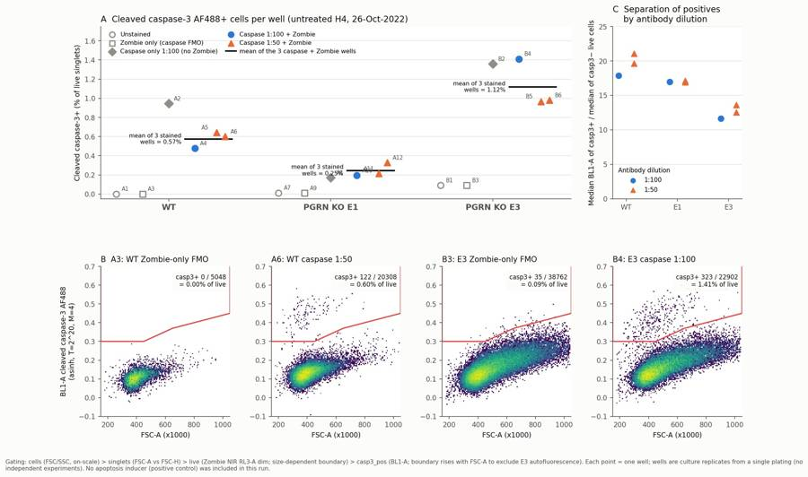
130
tool call · Bash
python3 - <<'EOF'
s = open('figure.py').read()
s = s.replace("dx = 7 if not (sl==4 and k==4) else -20\n axA.annotate(w, (x, pv.loc[w,'pct']), xytext=(dx, 4)",
"dx = 7 if not (sl==4 and k==4) else -20\n axA.annotate(w, (x, pv.loc[w,'pct']), xytext=(dx, -12)")
s = s.replace("axA.annotate(f'mean of 3 stained\\nwells = {m:.2f}%', (base+2.6, m), xytext=(-4, 0), textcoords='offset points', ha='right'",
"axA.annotate(f'mean of 3 stained\\nwells = {m:.2f}%', (base+4.45, m), xytext=(5, 0), textcoords='offset points', ha='left'")
s = s.replace("axA.set_xlim(-0.6, 2*6.2+5.0)", "axA.set_xlim(-0.6, 2*6.2+6.0)")
open('figure.py','w').write(s)
EOF
python3 -I figure.py >/dev/null && echo ok131
tool call · Read
{
"file_path": "/task/outputs/figure.png"
}132
tool output
ok
133
tool output
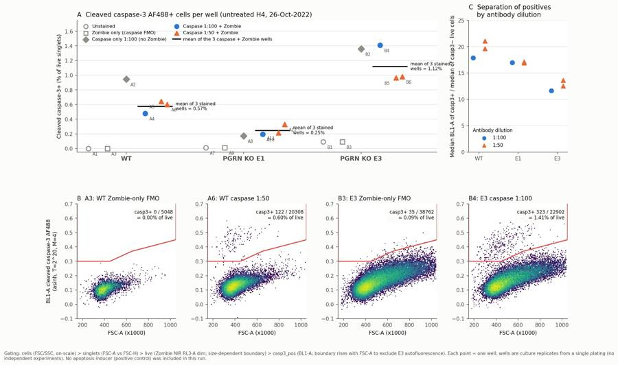
135
tool call · Bash
python3 - <<'EOF'
s = open('figure.py').read()
old = """ dx = 7 if not (sl==4 and k==4) else -20
axA.annotate(w, (x, pv.loc[w,'pct']), xytext=(dx, -12), textcoords='offset points', fontsize=7, color=INK2)
"""
new = """ if sl < 3:
axA.annotate(w, (x, pv.loc[w,'pct']), xytext=(7, 2), textcoords='offset points', fontsize=7, color=INK2)
elif sl == 3:
axA.annotate(w, (x, pv.loc[w,'pct']), xytext=(-8, 0), textcoords='offset points', ha='right', va='center', fontsize=7, color=INK2)
lo = pv.loc[ws[4:],'pct'].min()
axA.annotate(f'{ws[4]}, {ws[5]}', (base+4, lo), xytext=(0, -16), textcoords='offset points', ha='center', fontsize=7, color=INK2)
"""
assert old in s
s = s.replace(old, new)
open('figure.py','w').write(s)
EOF
python3 -I figure.py >/dev/null && echo ok136
tool call · Read
{
"file_path": "/task/outputs/figure.png"
}137
tool output
ok
138
tool output
140
tool call · Bash
python3 - <<'EOF'
s = open('figure.py').read()
s = s.replace(""" if sl < 3:
axA.annotate(w, (x, pv.loc[w,'pct']), xytext=(7, 2), textcoords='offset points', fontsize=7, color=INK2)
elif sl == 3:
axA.annotate(w, (x, pv.loc[w,'pct']), xytext=(-8, 0), textcoords='offset points', ha='right', va='center', fontsize=7, color=INK2)""",
""" if sl < 2:
axA.annotate(w, (x, pv.loc[w,'pct']), xytext=(7, 2), textcoords='offset points', fontsize=7, color=INK2)
elif sl == 2:
axA.annotate(w, (x, pv.loc[w,'pct']), xytext=(-8, 0), textcoords='offset points', ha='right', va='center', fontsize=7, color=INK2)
elif sl == 3:
axA.annotate(w, (x, pv.loc[w,'pct']), xytext=(0, -15), textcoords='offset points', ha='center', fontsize=7, color=INK2)""")
s = s.replace("axC.set_ylabel('Median BL1-A of casp3+ / median of casp3− live cells')", "axC.set_ylabel('Fold: median BL1-A casp3+ / casp3− (live)')")
open('figure.py','w').write(s)
EOF
python3 -I figure.py >/dev/null && echo ok141
tool call · Read
{
"file_path": "/task/outputs/figure.png"
}142
tool output
ok
143
tool output
145
agent
Figure is clean. Now the flags table. First I'm checking a few numbers for it (saturation, spillover).
146
tool call · Bash
python3 -I - <<'EOF'
import sys; sys.path.insert(0,'/task/work')
from load import *
g = fk.parse_gating_xml('/task/outputs/gates.xml')
for i,r in lay.iterrows():
s, df = load(r.file); res = g.gate_sample(s)
n=len(df)
satF = (df['FSC-A']>=1048575).sum(); satS=(df['SSC-A']>=1048575).sum()
off = ((df['FSC-A']>1040000)|(df['SSC-A']>1040000)).sum()
satR = (df['RL3-A']>=1048575).sum()
sm = res.get_gate_membership('singlets'); pos = res.get_gate_membership('casp3_pos_all_singlets'); neg = sm & ~pos
extra = ''
if 'caspase only' in r['sample']:
extra = 'RL3 med pos %.0f neg %.0f' % (np.median(df['RL3-A'][pos]), np.median(df['RL3-A'][neg]))
print(r.well, n, 'FSCsat %d (%.2f%%) SSCsat %d (%.2f%%) offscale_any %d (%.2f%%) RL3sat %d' % (satF, 100*satF/n, satS, 100*satS/n, off, 100*off/n, satR),
'BL1 med sing %.0f'%np.median(df['BL1-A'][sm]), extra)
EOF147
tool output
A1 6969 FSCsat 9 (0.13%) SSCsat 12 (0.17%) offscale_any 22 (0.32%) RL3sat 0 BL1 med sing 253 A2 3149 FSCsat 3 (0.10%) SSCsat 12 (0.38%) offscale_any 12 (0.38%) RL3sat 0 BL1 med sing 290 RL3 med pos 98 neg 119 A3 5742 FSCsat 9 (0.16%) SSCsat 14 (0.24%) offscale_any 19 (0.33%) RL3sat 6 BL1 med sing 245 A4 20776 FSCsat 67 (0.32%) SSCsat 46 (0.22%) offscale_any 99 (0.48%) RL3sat 19 BL1 med sing 290 A5 13119 FSCsat 18 (0.14%) SSCsat 18 (0.14%) offscale_any 32 (0.24%) RL3sat 17 BL1 med sing 314 A6 21946 FSCsat 38 (0.17%) SSCsat 28 (0.13%) offscale_any 63 (0.29%) RL3sat 41 BL1 med sing 322 A7 33911 FSCsat 17 (0.05%) SSCsat 33 (0.10%) offscale_any 43 (0.13%) RL3sat 0 BL1 med sing 263 A8 52749 FSCsat 35 (0.07%) SSCsat 52 (0.10%) offscale_any 79 (0.15%) RL3sat 0 BL1 med sing 277 RL3 med pos 138 neg 117 A9 49297 FSCsat 36 (0.07%) SSCsat 43 (0.09%) offscale_any 64 (0.13%) RL3sat 35 BL1 med sing 256 A10 58936 FSCsat 59 (0.10%) SSCsat 56 (0.10%) offscale_any 101 (0.17%) RL3sat 62 BL1 med sing 279 A11 51193 FSCsat 38 (0.07%) SSCsat 50 (0.10%) offscale_any 80 (0.16%) RL3sat 74 BL1 med sing 296 A12 51047 FSCsat 30 (0.06%) SSCsat 47 (0.09%) offscale_any 70 (0.14%) RL3sat 83 BL1 med sing 293 B1 26935 FSCsat 786 (2.92%) SSCsat 973 (3.61%) offscale_any 1227 (4.56%) RL3sat 0 BL1 med sing 401 B2 36048 FSCsat 1054 (2.92%) SSCsat 1198 (3.32%) offscale_any 1507 (4.18%) RL3sat 0 BL1 med sing 450 RL3 med pos 187 neg 176 B3 46022 FSCsat 1692 (3.68%) SSCsat 1830 (3.98%) offscale_any 2363 (5.13%) RL3sat 148 BL1 med sing 396 B4 27503 FSCsat 940 (3.42%) SSCsat 1004 (3.65%) offscale_any 1323 (4.81%) RL3sat 130 BL1 med sing 433 B5 37596 FSCsat 1355 (3.60%) SSCsat 1450 (3.86%) offscale_any 1891 (5.03%) RL3sat 138 BL1 med sing 475 B6 24797 FSCsat 676 (2.73%) SSCsat 818 (3.30%) offscale_any 1015 (4.09%) RL3sat 94 BL1 med sing 471
149
tool call · Bash
cat > flags.py <<'EOF'
import pandas as pd
lay = pd.read_csv('/task/inputs/plate_layout.csv')
F = {
'A1': ('too_few_events','keep_with_note','Low cell recovery for WT: 6969 total events / 6318 singlets in ~163 uL (E1 and E3 unstained wells: 33911 and 26935 events). 0 events fall in casp3_pos (95% upper bound ~0.05%), so still adequate as the WT unstained control.'),
'A2': ('too_few_events','keep_with_note','Only 3149 total events, 2538 singlets and 24 casp3_pos events (Poisson CV ~20%) vs 52749 events in the matching E1 well A8; 0.95% casp3+ is imprecise. Used only as a supporting single-stain control, not in the stained-well means.'),
'A3': ('too_few_events','keep_with_note','Low WT recovery: 5742 total events / 5048 live singlets (E1 zombie-only A9: 49297 events). 0 casp3_pos events, 1.7% Zombie-bright; adequate as the WT caspase FMO, but low.'),
'A4': ('none','keep',''), 'A5': ('none','keep',''), 'A6': ('none','keep',''),
'A7': ('none','keep',''), 'A8': ('none','keep',''), 'A9': ('none','keep',''),
'A10': ('none','keep',''), 'A11': ('none','keep',''), 'A12': ('none','keep',''),
}
sat = {'B1':(786,2.92,973,3.61,4.56),'B2':(1054,2.92,1198,3.32,4.18),'B3':(1692,3.68,1830,3.98,5.13),
'B4':(940,3.42,1004,3.65,4.81),'B5':(1355,3.60,1450,3.86,5.03),'B6':(676,2.73,818,3.30,4.09)}
for w,(f,fp,s_,sp,off) in sat.items():
F[w] = ('saturation','keep_with_note',
f'Large E3 cells run off scale at FSC 20 / SSC 290: {f} events ({fp}%) at FSC-A max 1048575 and {s_} ({sp}%) at SSC-A max; {off}% of events lie above 1040000 on FSC-A or SSC-A and are removed by the cells gate (WT/E1 wells <=0.5%). '
'E3 also has size-linked BL1 autofluorescence (unstained/FMO casp3_pos background 0.09%), so the casp3_pos boundary rises with FSC-A.')
rows = [dict(file=r.file, well=r.well, issue_type=F[r.well][0], evidence=F[r.well][2], decision=F[r.well][1]) for _,r in lay.iterrows()]
pd.DataFrame(rows).to_csv('/task/outputs/flags.csv', index=False)
print(pd.DataFrame(rows)[['well','issue_type','decision']].to_string())
EOF
python3 -I flags.py150
tool output
well issue_type decision 0 A1 too_few_events keep_with_note 1 A2 too_few_events keep_with_note 2 A3 too_few_events keep_with_note 3 A4 none keep 4 A5 none keep 5 A6 none keep 6 A7 none keep 7 A8 none keep 8 A9 none keep 9 A10 none keep 10 A11 none keep 11 A12 none keep 12 B1 saturation keep_with_note 13 B2 saturation keep_with_note 14 B3 saturation keep_with_note 15 B4 saturation keep_with_note 16 B5 saturation keep_with_note 17 B6 saturation keep_with_note
152
agent
Now `answer.json` and the report.
153
tool call · Bash
cat > answer.py <<'EOF'
import json
A = {
"question": "Does the CST cleaved caspase-3 (Asp175) Alexa Fluor 488 antibody (#9669), used intracellularly (IC fixation/permeabilisation, Zombie NIR viability dye, Attune BL1), detect a cleaved caspase-3-positive population in H4 WT and PGRN KO (E1, E3) cells above the unstained/FMO background, which antibody dilution (1:100 vs 1:50) should be used, and do the PGRN KO lines show more caspase-3-positive cells than WT?",
"comparisons": [
{"comparison": "Assay signal in WT: Zombie-only FMO vs caspase-stained wells (1:100 + 1:50 pooled)", "a": "WT_Zombie_only_FMO", "b": "WT_casp3_stained_pooled_1to100_and_1to50",
"direction": "increase", "magnitude": "0.00% (0/5048) -> 0.57 +/- 0.09% casp3+ of live singlets (n=3 wells); positive cluster 18-21x brighter (median BL1-A) than casp3- cells", "confidence": "high"},
{"comparison": "Assay signal in PGRN KO E1: Zombie-only FMO vs caspase-stained wells", "a": "E1_Zombie_only_FMO", "b": "E1_casp3_stained_pooled_1to100_and_1to50",
"direction": "increase", "magnitude": "0.009% (4/45534) -> 0.25 +/- 0.07% casp3+ of live singlets (n=3); positives ~17x brighter than negatives", "confidence": "high"},
{"comparison": "Assay signal in PGRN KO E3: Zombie-only FMO vs caspase-stained wells", "a": "E3_Zombie_only_FMO", "b": "E3_casp3_stained_pooled_1to100_and_1to50",
"direction": "increase", "magnitude": "0.09% (35/38762, autofluorescent large cells) -> 1.12 +/- 0.25% casp3+ of live singlets (n=3); ~12x more than FMO; positives 12-14x brighter than negatives", "confidence": "high"},
{"comparison": "Antibody dilution in WT: 1:100 vs 1:50", "a": "WT_casp3_1to100_plus_Zombie", "b": "WT_casp3_1to50_plus_Zombie",
"direction": "no_clear_change", "magnitude": "0.48% (n=1) vs 0.62 +/- 0.03% (n=2) (+0.15 percentage points, opposite to E3); positive/negative brightness ratio 17.9 vs 19.6-21.1", "confidence": "low"},
{"comparison": "Antibody dilution in E1: 1:100 vs 1:50", "a": "E1_casp3_1to100_plus_Zombie", "b": "E1_casp3_1to50_plus_Zombie",
"direction": "no_clear_change", "magnitude": "0.19% (n=1) vs 0.27 +/- 0.08% (n=2; range 0.21-0.33, which contains the 1:100 value); brightness ratio 17.0 vs 16.9-17.2", "confidence": "low"},
{"comparison": "Antibody dilution in E3: 1:100 vs 1:50", "a": "E3_casp3_1to100_plus_Zombie", "b": "E3_casp3_1to50_plus_Zombie",
"direction": "no_clear_change", "magnitude": "1.41% (n=1) vs 0.97 +/- 0.01% (n=2) (-0.44 percentage points, opposite to WT); brightness ratio 11.6 vs 12.5-13.6", "confidence": "low"},
{"comparison": "Genotype: WT vs PGRN KO E1 (caspase-stained wells, both dilutions pooled)", "a": "WT_casp3_stained_pooled_1to100_and_1to50", "b": "E1_casp3_stained_pooled_1to100_and_1to50",
"direction": "decrease", "magnitude": "0.57 -> 0.25% casp3+ of live (0.43x; -0.33 percentage points; Welch p=0.008, n=3 culture wells from one plating); the caspase-only wells agree (0.95% vs 0.17%)", "confidence": "medium"},
{"comparison": "Genotype: WT vs PGRN KO E3 (caspase-stained wells, both dilutions pooled)", "a": "WT_casp3_stained_pooled_1to100_and_1to50", "b": "E3_casp3_stained_pooled_1to100_and_1to50",
"direction": "increase", "magnitude": "0.57 -> 1.12% casp3+ of live (1.95x; +0.55 percentage points; 1.8x after subtracting the FMO background; Welch p=0.05, n=3); the caspase-only wells agree (0.95% vs 1.36%)", "confidence": "medium"}
],
"overall_answer": "partial: the cleaved caspase-3 AF488 ICFC stain picks out a distinct caspase-3+ population in all three H4 lines. These cells are 12-21x brighter than negative cells and are absent from the unstained and Zombie-only FMO controls (0-0.09%). But untreated cells give only 0.2-1.4% positives, and no apoptosis-inducer (camptothecin) positive control was run, so it is not yet shown that the assay can report a rise in caspase-3 activation. 1:50 gives no more positives than 1:100, so 1:100 is enough. The PGRN KO clones disagree with each other (E3 ~2x WT, E1 ~0.4x WT), so there is no consistent PGRN-loss effect at baseline.",
"assay_verdict": "needs_optimisation",
"next_action": "repeat_with_change",
"next_change": {
"what": "Apoptosis positive control: add camptothecin-treated wells (camptothecin is in the materials list but was not used)",
"from": "untreated cells only (no inducer; basal cleaved caspase-3+ 0.2-1.4% of live cells)",
"to": "for each H4 line, camptothecin at e.g. 1 and 5 uM for ~16-24 h next to a DMSO vehicle control, >=3 wells per condition, stained with cleaved caspase-3 AF488 at 1:100 plus Zombie NIR, keeping a Zombie-only FMO per line",
"why": "The stain separates positives cleanly from negatives, but basal apoptosis is so low that the assay's dynamic range and specificity for induced caspase-3 cleavage are untested. A camptothecin dose-response (expect a large, dose-dependent rise in casp3+ live cells) is needed before using the assay to compare PGRN KO vs WT or iPSC neurons. 1:100 performs as well as 1:50, which halves antibody use."},
"excluded_wells": [],
"caveats": [
"No positive control (apoptosis inducer) was included, so the assay's ability to detect increased caspase-3 activation is untested; all wells are untreated and basal casp3+ frequencies are low (0.2-1.4% of live singlets; 79-341 positive events per stained well).",
"Replicates are culture wells from a single plating and a single staining/acquisition run (n=1 for 1:100, n=2 for 1:50 per line); there is no independent biological replication, so the genotype differences are within-experiment only.",
"The two PGRN KO clones move in opposite directions relative to WT (E1 lower, E3 higher), which points to clone-specific differences rather than a PGRN-loss effect. E3 cells are also much larger and more autofluorescent (median FSC-A ~465k vs ~380-400k).",
"WT wells gave far fewer events (3149-21946 vs 24797-58936 for E1/E3) at the same ~163 uL acquired, which suggests lower WT cell number or recovery. Cell dens
… [1,147 more characters not shown]154
tool output
ok
156
tool call · Bash
python3 -I - <<'EOF'
import pandas as pd
c = pd.read_csv('/task/outputs/counts.csv'); lay = pd.read_csv('/task/inputs/plate_layout.csv')
pv = c.pivot(index='well', columns='population', values='count')
mf = pd.read_csv('mfi_stained.csv').set_index('well')
out = ['| Well | Sample | Events | Live singlets | Dead (% singlets) | casp3+ events | casp3+ (% live) | Fold pos/neg BL1 |','|---|---|---|---|---|---|---|---|']
for _,r in lay.iterrows():
p = pv.loc[r.well]
fold = f"{mf.loc[r.well,'med_pos']/mf.loc[r.well,'med_neg']:.1f}" if r.well in mf.index else '–'
out.append(f"| {r.well} | {r['sample']} | {p.all_events} | {p.live} | {100*p.dead/p.singlets:.1f} | {p.casp3_pos} | {100*p.casp3_pos/p.live:.2f} | {fold} |")
open('well_table.md','w').write('\n'.join(out))
print('\n'.join(out))
EOF157
tool output
| Well | Sample | Events | Live singlets | Dead (% singlets) | casp3+ events | casp3+ (% live) | Fold pos/neg BL1 | |---|---|---|---|---|---|---|---| | A1 | WT no stain | 6969 | 6318 | 0.0 | 0 | 0.00 | – | | A2 | WT caspase only (1:100) | 3149 | 2538 | 0.0 | 24 | 0.95 | – | | A3 | WT zombie only | 5742 | 5048 | 1.7 | 0 | 0.00 | – | | A4 | WT-1 caspase @ 1:100 | 20776 | 19096 | 1.8 | 91 | 0.48 | 17.9 | | A5 | WT-2 caspase @ 1:50 | 13119 | 12288 | 1.3 | 79 | 0.64 | 19.6 | | A6 | WT-3 caspase @ 1:50 | 21946 | 20308 | 2.4 | 122 | 0.60 | 21.1 | | A7 | E1 no stain | 33911 | 32256 | 0.0 | 4 | 0.01 | – | | A8 | E1 caspase only (1:100) | 52749 | 50355 | 0.0 | 86 | 0.17 | – | | A9 | E1 zombie only | 49297 | 45534 | 3.0 | 4 | 0.01 | – | | A10 | E1-1 caspase @ 1:100 | 58936 | 54438 | 3.0 | 106 | 0.19 | 17.0 | | A11 | E1-2 caspase @1:50 | 51193 | 47134 | 2.9 | 101 | 0.21 | 17.2 | | A12 | E1-3 caspase @ 1:50 | 51047 | 46254 | 3.6 | 152 | 0.33 | 16.9 | | B1 | E3 no stain | 26935 | 23077 | 0.0 | 21 | 0.09 | – | | B2 | E3 caspase only (1:100) | 36048 | 31283 | 0.0 | 425 | 1.36 | – | | B3 | E3 zombie only | 46022 | 38762 | 3.0 | 35 | 0.09 | – | | B4 | E3-1 @ 1:100 | 27503 | 22902 | 4.0 | 323 | 1.41 | 11.6 | | B5 | E3-2 caspase @ 1:50 | 37596 | 32312 | 3.1 | 312 | 0.97 | 13.6 | | B6 | E3-3 caspase @ 1:50 | 24797 | 21055 | 4.0 | 206 | 0.98 | 12.5 |
158
tool call · Bash
python3 -I - <<'EOF'
table = open('/task/work/well_table.md').read()
R = f"""# EXP22004082 – H4 cleaved caspase-3 ICFC, Attune run of 26-Oct-2022
## Question
This run was a practice run of an intracellular flow (ICFC) assay for caspase-3 activity in H4 cells. The assay is meant for later use in iPSC-derived neurons. The questions are:
1. Does the CST cleaved caspase-3 (Asp175) Alexa Fluor 488 antibody (#9669) detect a cleaved caspase-3-positive population above the unstained and FMO background? The stain was used after IC fixation/permeabilisation, with Zombie NIR for viability.
2. Which antibody dilution should be used, 1:100 or 1:50?
3. Do the PGRN KO lines (E1, E3) show more caspase-3-positive cells than WT? This was secondary.
No apoptosis inducer was applied in this run. Camptothecin is listed in the materials but appears nowhere in the protocol or the plate map, so every well is untreated.
## Methods
- **Data:** 18 Attune NxT FCS 3.1 files (wells A1–A12, B1–B6), analysed unchanged. Settings were identical in every file: FSC 20, SSC 290, BL1 250, RL3 350; 100 µL/min; ~98 s; 162–164 µL acquired.
- **Channel assignment:** the FCS labels are out of date (BL1 is labelled "AAV-GFP"). From the plan, BL1-A (488 nm laser, 530/30 filter) carries cleaved caspase-3 AF488 and RL3-A (637 nm laser, 780/60 filter) carries Zombie NIR.
- **Compensation:** none (`uncompensated`). The file spillover matrix is the identity. The single stains show no meaningful crossover:
- Median BL1-A of Zombie-only vs unstained wells: 245 vs 253 (WT), 256 vs 263 (E1), 396 vs 401 (E3).
- Median RL3-A of caspase+ vs caspase− cells in the caspase-only wells: 98 vs 119, 138 vs 117, 187 vs 176.
- **Gating:** done in FlowKit 1.2.3 with one strategy for all wells, saved as `gates.xml`. Fluorescence axes use the GatingML asinh transform (T = 2^20, M = 4, A = 0). The gates are:
1. `cells`: rectangle, FSC-A 180,000–1,040,000 and SSC-A 40,000–1,040,000. This removes debris and saturated or off-scale events.
2. `singlets`: polygon on FSC-A vs FSC-H, keeping events with FSC-H/FSC-A of about 0.36–0.88.
3. `live`: polygon on FSC-A vs asinh RL3-A, below the Zombie-bright cloud. The boundary rises from 0.63 to 0.76 (about 2.5×10^4 to 1.3×10^5 raw units) as FSC-A increases, because live-cell amine staining scales with cell size. Wells without Zombie NIR keep all singlets in this gate.
4. `casp3_pos` (marker_positive, parent `live`): polygon on FSC-A vs asinh BL1-A. The lower boundary is flat at 0.30 (about 1.6×10^3 raw units) up to FSC-A 450k, then rises to 0.37 at 650k and 0.45 at 1.05M. The rise follows the size-linked autofluorescence of large E3 cells. The boundary was placed against the unstained and Zombie-only FMO wells of each line.
5. Two extra populations (role `other`): `dead` (Zombie-bright singlets, the complement of `live`) and `casp3_pos_all_singlets` (the same caspase gate applied to all singlets).
- **Metric:** % cleaved caspase-3+ of live singlets = casp3_pos / live × 100, with no normalisation. Each condition is summarised as the mean ± SD across wells. Separation is reported as the ratio of median BL1-A in casp3+ vs casp3− live cells.
- **Pooling for the genotype comparison:** for each line, the three caspase + Zombie wells (one at 1:100, two at 1:50) were pooled. Pooling is justified because dilution had no consistent effect (see Results). Welch t-tests on well values are descriptive only, because wells come from one plating.
- **QC:** event rate and median FSC/BL1 were checked over time (no clogs, no running dry, no drift; rate CV 0.18–0.24 per 10-s bin). Saturation, event yield and carry-over were also checked; at most 7 Zombie-stained-like events appear in any unstained well.
## Results
**Per-well results** (all counts from `gates.xml`):
{table}
**1. A specific caspase-3+ population is detected.** In every caspase-stained well, a discrete population sits 12–21× above the negative cells on BL1-A (about 5,000–6,800 vs 280–470 median).
- It is essentially absent from the unstained and Zombie-only FMO wells: 0/5,048 cells (WT), 4/45,534 (E1) and 35/38,762 (E3, autofluorescent large cells).
- It also appears in the caspase-only wells, which have no viability dye.
- The positive cells sit at slightly lower FSC-A than the negatives (WT median 365–399k vs ~400k; E1 359–382k vs ~380k), which fits apoptotic shrinkage.
- They are Zombie-dim (membrane-intact). The Zombie-bright dead cells (1.3–4.0% of singlets) are almost all caspase-3 negative (pooled 0.9% WT, 0.3% E1, 2.6% E3). So % of live and % of all singlets differ by at most 0.1 percentage points.
**2. Basal frequencies are low.** In untreated cells, 0.57 ± 0.09% (WT), 0.25 ± 0.07% (E1) and 1.12 ± 0.25% (E3) of live singlets are casp3+ (n = 3 wells each; 79–341 positive events per well). After subtracting the FMO background, the values are 0.57%, 0.24% and 1.03%.
**3. Dilution: 1:50 is no better than 1:100.** The % positive does not shift consistently:
- WT: 0.48% at 1:100 vs 0.62 ± 0.03% at 1:50.
- E1: 0.19% vs 0.27 ± 0.08%.
- E3: 1.41% vs 0.97 ± 0.01%, the opposite direction to WT.
At 1:50, positives are 0–20% brighter, but the background on negatives also rises (median 313–321 vs 289 in WT). The separation ratio is about the same: 17.9 vs 19.6–21.1 (WT), 17.0 vs 16.9–17.2 (E1), 11.6 vs 12.5–13.6 (E3). The 1:100 dilution therefore looks close to saturating.
**4. Genotype: no consistent PGRN-KO effect.** Compared with WT, E1 is lower (0.43×; Welch p = 0.008) and E3 is higher (1.95×; p = 0.05). The ranking E3 > WT > E1 holds in every well, including the caspase-only wells (1.36%, 0.95%, 0.17%). But the two KO clones move in opposite directions. E3 cells also differ clearly in size and scatter (median FSC-A ~465k vs ~380–400k, a broad high-SSC tail, more autofluorescence). This points to clone-specific biology rather than an effect of PGRN loss.
Viability was high in all lines: 96–99% of singlets were Zombie-dim.
## Conclusion
**The answer
… [3,307 more characters not shown]159
tool output
total 336 drwxr-xr-x 2 root root 4096 Nov 10 17:18 . drwxr-xr-x 5 root root 4096 Nov 10 17:08 .. -rw-r--r-- 1 root root 7165 Nov 10 17:18 answer.json -rw-r--r-- 1 root root 3888 Nov 10 17:15 condition_summary.csv -rw-r--r-- 1 root root 11408 Nov 10 17:14 counts.csv -rw-r--r-- 1 root root 278996 Nov 10 17:16 figure.png -rw-r--r-- 1 root root 4170 Nov 10 17:17 flags.csv -rw-r--r-- 1 root root 6751 Nov 10 17:14 gates.xml -rw-r--r-- 1 root root 10601 Nov 10 17:18 report.md
161
agent
Running a final consistency check across all deliverables (including recomputing counts from the saved `gates.xml`).
162
tool call · Bash
sed -i 's/Tightening the caspase gate at large FSC lowered E3 values by ~7% without changing any conclusion/Tightening the caspase gate at large FSC lowered E3 values by 6–10% without changing any conclusion/' /task/outputs/report.md && python3 -I - <<'EOF'
import flowkit as fk, pandas as pd, json, os, numpy as np
O='/task/outputs'
g = fk.parse_gating_xml(f'{O}/gates.xml')
c = pd.read_csv(f'{O}/counts.csv', keep_default_na=False)
assert list(c.columns)==['file','well','population','role','parent','count','pct_of_parent']
lay = pd.read_csv('/task/inputs/plate_layout.csv')
assert set(c.file)==set(lay.file) and len(c)==18*7
pops = c.groupby('file').population.apply(lambda s: tuple(sorted(s)))
assert pops.nunique()==1
rl = c[c.role!='other'].groupby('role').population.unique()
assert all(len(v)==1 for v in rl) and set(rl.index)=={'cells','singlets','live','marker_positive'}
gate_names = {n for n,_ in g.get_gate_ids()}
assert set(c.population)-{'all_events'} <= gate_names
for f in lay.file:
s = fk.Sample(os.path.join('/task/inputs/raw', f)); rep = g.gate_sample(s).report.set_index('gate_name')['count']
sub = c[c.file==f].set_index('population')
for p in rep.index: assert int(sub.loc[p,'count'])==int(rep[p]), (f,p)
assert int(sub.loc['all_events','count'])==s.event_count
for p,row in sub.iterrows():
if p=='all_events': assert row.pct_of_parent=='' and row.parent=='none'; continue
pc = int(sub.loc[row.parent,'count'])
assert (row.pct_of_parent=='') == (pc==0)
if pc: assert abs(float(row.pct_of_parent)-100*int(row['count'])/pc)<1e-3
fl = pd.read_csv(f'{O}/flags.csv', keep_default_na=False)
assert list(fl.columns)==['file','well','issue_type','evidence','decision'] and len(fl)==18
assert all((fl.issue_type!='none') | (fl.decision=='keep'))
assert all((fl.issue_type=='none') | (fl.evidence.str.len()>0))
cs = pd.read_csv(f'{O}/condition_summary.csv', keep_default_na=False)
assert list(cs.columns)==['condition','wells','n_wells_used','mean','sd','metric_definition','normalisation_applied']
for _,r in cs.iterrows():
ws = r.wells.split(';'); assert len(ws)==r.n_wells_used and set(ws)<=set(lay.well)
assert (r.sd=='')==(r.n_wells_used==1)
a = json.load(open(f'{O}/answer.json'))
assert a['excluded_wells']==sorted(fl[fl.decision=='exclude'].well)
assert a['overall_answer'].split(':')[0] in ('yes','partial','no')
heads = [l for l in open(f'{O}/report.md') if l.startswith('## ')]
print(heads); print('ALL CHECKS PASSED')
EOF163
tool output
['## Question\n', '## Methods\n', '## Results\n', '## Conclusion\n', '## Caveats\n', '## Recommendation\n'] ALL CHECKS PASSED
165
agent
The answer is **partial**. The cleaved caspase-3 AF488 stain works technically in H4 cells, but this run cannot show that it reports increased apoptosis, because no positive control was run. All seven deliverables are in `/task/outputs/`, and the counts recomputed from the saved `gates.xml` match `counts.csv` exactly.
**What the data show**
- **The stain picks out a real positive population.** In every stained well there is a separate group of cells 12–21× brighter than the negatives. It is essentially absent from the unstained and Zombie-only control wells (0–0.09%). These positive cells are slightly smaller and still membrane-intact, which fits apoptosis. The Zombie-bright dead cells (1–4% of single cells) are almost all caspase-3 negative.
- **Basal levels in untreated cells are very low.** As a percentage of live single cells, caspase-3-positive cells are:
- WT: 0.57 ± 0.09%
- E1: 0.25 ± 0.07%
- E3: 1.12 ± 0.25%
There are 3 wells per line, with 79–341 positive cells per well.
- **1:50 is no better than 1:100.** The percentage positive does not shift consistently (WT goes up slightly, E3 goes down), and the separation from negatives is about the same. Use 1:100.
- **No consistent PGRN-knockout effect.** E1 is below WT (0.43×) and E3 is above WT (1.95×), so the two knockout clones go in opposite directions. E3 cells are also much larger, so this looks like a difference between clones rather than an effect of losing PGRN. All wells come from a single plating, so none of these are independent replicates.
**Verdict and next step:** the assay needs optimisation. My recommendation is to repeat it with one change: add camptothecin-treated wells (for example 1 and 5 µM for about 16–24 h, with a DMSO control), at 1:100, with at least 3 wells per condition. Camptothecin is in the materials list but was never used in this run.
**Quality flags (no wells excluded)**
- **WT controls A1–A3 are low on cells.** They have 3–7k events against 25–59k for the other lines. A2 has only 24 positive events, so its value is imprecise.
- **E3 wells B1–B6 have scatter saturation.** About 3–4% of events go off scale on forward and side scatter, so the largest E3 cells are left out of the analysis. E3 cells also have higher background fluorescence, so the caspase gate boundary rises with cell size.
**Labels in the FCS files:** the caspase channel (BL1) is still labelled "AAV-GFP". Based on the plan, I treated BL1 as caspase-3 AF488 and RL3 as Zombie NIR. I did not apply compensation: the files' own spillover matrix is the identity, and the single-stain wells show no meaningful crossover between the two dyes.
Files are in `/task/outputs/`:
- `gates.xml`
- `counts.csv`
- `flags.csv`
- `condition_summary.csv`
- `figure.png`
- `report.md`
- `answer.json`
final result
The answer is **partial**. The cleaved caspase-3 AF488 stain works technically in H4 cells, but this run cannot show that it reports increased apoptosis, because no positive control was run. All seven deliverables are in `/task/outputs/`, and the counts recomputed from the saved `gates.xml` match `counts.csv` exactly. **What the data show** - **The stain picks out a real positive population.** In every stained well there is a separate group of cells 12–21× brighter than the negatives. It is essentially absent from the unstained and Zombie-only control wells (0–0.09%). These positive cells are slightly smaller and still membrane-intact, which fits apoptosis. The Zombie-bright dead cells (1–4% of single cells) are almost all caspase-3 negative. - **Basal levels in untreated cells are very low.** As a percentage of live single cells, caspase-3-positive cells are: - WT: 0.57 ± 0.09% - E1: 0.25 ± 0.07% - E3: 1.12 ± 0.25% There are 3 wells per line, with 79–341 positive cells per well. - **1:50 is no better than 1:100.** The percentage positive does not shift consistently (WT goes up slightly, E3 goes down), and the separation from negatives is about the same. Use 1:100. - **No consistent PGRN-knockout effect.** E1 is below WT (0.43×) and E3 is above WT (1.95×), so the two knockout clones go in opposite directions. E3 cells are also much larger, so this looks like a difference between clones rather than an effect of losing PGRN. All wells come from a single plating, so none of these are independent replicates. **Verdict and next step:** the assay needs optimisation. My recommendation is to repeat it with one change: add camptothecin-treated wells (for example 1 and 5 µM for about 16–24 h, with a DMSO control), at 1:100, with at least 3 wells per condition. Camptothecin is in the materials list but was never used in this run. **Quality flags (no wells excluded)** - **WT controls A1–A3 are low on cells.** They have 3–7k events against 25–59k for the other lines. A2 has only 24 positive events, so its value is imprecise. - **E3 wells B1–B6 have scatter saturation.** About 3–4% of events go off scale on forward and side scatter, so the largest E3 cells are left out of the analysis. E3 cells also have higher background fluorescence, so the caspase gate boundary rises with cell size. **Labels in the FCS files:** the caspase channel (BL1) is still labelled "AAV-GFP". Based on the plan, I treated BL1 as caspase-3 AF488 and RL3 as Zombie NIR. I did not apply compensation: the files' own spillover matrix is the identity, and the single-stain wells show no meaningful crossover between the two dyes. Files are in `/task/outputs/`: - `gates.xml` - `counts.csv` - `flags.csv` - `condition_summary.csv` - `figure.png` - `report.md` - `answer.json`